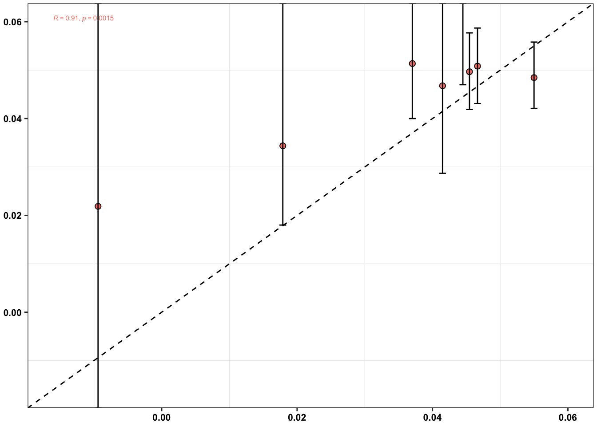

ErrorRates_Tileseq_NGS_Duplex_SSCS
Haider Inam
2024-12-23
Last updated: 2025-03-08
Checks: 6 1
Knit directory: duplex_sequencing_screen/
This reproducible R Markdown analysis was created with workflowr (version 1.6.2). The Checks tab describes the reproducibility checks that were applied when the results were created. The Past versions tab lists the development history.
The R Markdown file has unstaged changes. To know which version of
the R Markdown file created these results, you’ll want to first commit
it to the Git repo. If you’re still working on the analysis, you can
ignore this warning. When you’re finished, you can run
wflow_publish to commit the R Markdown file and build the
HTML.
Great job! The global environment was empty. Objects defined in the global environment can affect the analysis in your R Markdown file in unknown ways. For reproduciblity it’s best to always run the code in an empty environment.
The command set.seed(20200402) was run prior to running
the code in the R Markdown file. Setting a seed ensures that any results
that rely on randomness, e.g. subsampling or permutations, are
reproducible.
Great job! Recording the operating system, R version, and package versions is critical for reproducibility.
Nice! There were no cached chunks for this analysis, so you can be confident that you successfully produced the results during this run.
Great job! Using relative paths to the files within your workflowr project makes it easier to run your code on other machines.
Great! You are using Git for version control. Tracking code development and connecting the code version to the results is critical for reproducibility.
The results in this page were generated with repository version 836ad4b. See the Past versions tab to see a history of the changes made to the R Markdown and HTML files.
Note that you need to be careful to ensure that all relevant files for
the analysis have been committed to Git prior to generating the results
(you can use wflow_publish or
wflow_git_commit). workflowr only checks the R Markdown
file, but you know if there are other scripts or data files that it
depends on. Below is the status of the Git repository when the results
were generated:
Ignored files:
Ignored: .Rhistory
Ignored: .Rproj.user/
Ignored: 05.2023.FiguresArchive/.DS_Store
Ignored: code/archive/
Ignored: data/Consensus_Data/.Rhistory
Ignored: data/Consensus_Data/Marta_tileseq/.DS_Store
Ignored: data/Consensus_Data/Marta_tileseq/BR1_A_H_1_3_R1/.DS_Store
Ignored: data/Consensus_Data/Marta_tileseq/BR1_A_H_1_3_R1/variant_caller_outputs/
Ignored: data/Consensus_Data/Marta_tileseq/BR1_A_H_1_3_R2/.DS_Store
Ignored: data/Consensus_Data/Marta_tileseq/BR1_A_H_1_3_R2/variant_caller_outputs/
Ignored: data/Consensus_Data/Marta_tileseq/BR1_A_Lo_1_3_R1/.DS_Store
Ignored: data/Consensus_Data/Marta_tileseq/BR1_A_Lo_1_3_R1/variant_caller_outputs/
Ignored: data/Consensus_Data/Marta_tileseq/BR1_A_Lo_1_3_R2/.DS_Store
Ignored: data/Consensus_Data/Marta_tileseq/BR1_A_Lo_1_3_R2/variant_caller_outputs/
Ignored: data/Consensus_Data/Marta_tileseq/BR1_A_M_1_3_R1/.DS_Store
Ignored: data/Consensus_Data/Marta_tileseq/BR1_A_M_1_3_R1/variant_caller_outputs/
Ignored: data/Consensus_Data/Marta_tileseq/BR1_A_M_1_3_R2/.DS_Store
Ignored: data/Consensus_Data/Marta_tileseq/BR1_A_M_1_3_R2/variant_caller_outputs/
Ignored: data/Consensus_Data/Marta_tileseq/BR1_A_N_1_3_R1/.DS_Store
Ignored: data/Consensus_Data/Marta_tileseq/BR1_A_N_1_3_R1/variant_caller_outputs/
Ignored: data/Consensus_Data/Marta_tileseq/BR1_A_N_1_3_R2/.DS_Store
Ignored: data/Consensus_Data/Marta_tileseq/BR1_A_N_1_3_R2/variant_caller_outputs/
Ignored: data/Consensus_Data/Marta_tileseq/BR1_B_H_1_3_R1/.DS_Store
Ignored: data/Consensus_Data/Marta_tileseq/BR1_B_H_1_3_R1/variant_caller_outputs/
Ignored: data/Consensus_Data/Marta_tileseq/BR1_B_H_1_3_R2/.DS_Store
Ignored: data/Consensus_Data/Marta_tileseq/BR1_B_H_1_3_R2/variant_caller_outputs/
Ignored: data/Consensus_Data/Marta_tileseq/BR1_B_Lo_1_3_R1/.DS_Store
Ignored: data/Consensus_Data/Marta_tileseq/BR1_B_Lo_1_3_R1/variant_caller_outputs/
Ignored: data/Consensus_Data/Marta_tileseq/BR1_B_Lo_1_3_R2/.DS_Store
Ignored: data/Consensus_Data/Marta_tileseq/BR1_B_Lo_1_3_R2/variant_caller_outputs/
Ignored: data/Consensus_Data/Marta_tileseq/BR1_B_M_1_3_R1/.DS_Store
Ignored: data/Consensus_Data/Marta_tileseq/BR1_B_M_1_3_R1/variant_caller_outputs/
Ignored: data/Consensus_Data/Marta_tileseq/BR1_B_M_1_3_R2/.DS_Store
Ignored: data/Consensus_Data/Marta_tileseq/BR1_B_M_1_3_R2/variant_caller_outputs/
Ignored: data/Consensus_Data/Marta_tileseq/BR1_B_N_1_3_R1/.DS_Store
Ignored: data/Consensus_Data/Marta_tileseq/BR1_B_N_1_3_R1/variant_caller_outputs/
Ignored: data/Consensus_Data/Marta_tileseq/BR1_B_N_1_3_R2/.DS_Store
Ignored: data/Consensus_Data/Marta_tileseq/BR1_B_N_1_3_R2/variant_caller_outputs/
Ignored: data/Consensus_Data/Marta_tileseq/BR1_D0_A_1_3_R1/.DS_Store
Ignored: data/Consensus_Data/Marta_tileseq/BR1_D0_A_1_3_R1/variant_caller_outputs/
Ignored: data/Consensus_Data/Marta_tileseq/BR1_D0_A_1_3_R2/.DS_Store
Ignored: data/Consensus_Data/Marta_tileseq/BR1_D0_A_1_3_R2/variant_caller_outputs/
Ignored: data/Consensus_Data/Marta_tileseq/BR1_D0_B_1_3_R1/.DS_Store
Ignored: data/Consensus_Data/Marta_tileseq/BR1_D0_B_1_3_R1/variant_caller_outputs/
Ignored: data/Consensus_Data/Marta_tileseq/BR1_D0_B_1_3_R2/.DS_Store
Ignored: data/Consensus_Data/Marta_tileseq/BR1_D0_B_1_3_R2/variant_caller_outputs/
Ignored: data/Consensus_Data/Novogene_lane11/.DS_Store
Ignored: data/Consensus_Data/Novogene_lane11/sample1/.DS_Store
Ignored: data/Consensus_Data/Novogene_lane11/sample2/.DS_Store
Ignored: data/Consensus_Data/Novogene_lane11/sample3/.DS_Store
Ignored: data/Consensus_Data/Novogene_lane11/sample4/.DS_Store
Ignored: data/Consensus_Data/Novogene_lane11/sample5/.DS_Store
Ignored: data/Consensus_Data/Novogene_lane11/sample5/variant_caller_outputs/.DS_Store
Ignored: data/Consensus_Data/Novogene_lane11/sample7/.DS_Store
Ignored: data/Consensus_Data/Novogene_lane12/.DS_Store
Ignored: data/Consensus_Data/Novogene_lane12/sample1/.DS_Store
Ignored: data/Consensus_Data/Novogene_lane13/.DS_Store
Ignored: data/Consensus_Data/Novogene_lane13/sample1/.DS_Store
Ignored: data/Consensus_Data/Novogene_lane13/sample10/.DS_Store
Ignored: data/Consensus_Data/Novogene_lane13/sample11/.DS_Store
Ignored: data/Consensus_Data/Novogene_lane13/sample12/.DS_Store
Ignored: data/Consensus_Data/Novogene_lane13/sample7/.DS_Store
Ignored: data/Consensus_Data/Novogene_lane13/sample8/variant_caller_outputs/
Ignored: data/Consensus_Data/Novogene_lane13/sample9/.DS_Store
Ignored: data/Consensus_Data/Novogene_lane14/.DS_Store
Ignored: data/Consensus_Data/Novogene_lane14/sample10_combined/.DS_Store
Ignored: data/Consensus_Data/Novogene_lane14/sample11/.DS_Store
Ignored: data/Consensus_Data/Novogene_lane14/sample12/.DS_Store
Ignored: data/Consensus_Data/Novogene_lane14/sample13/
Ignored: data/Consensus_Data/Novogene_lane14/sample14_combined/.DS_Store
Ignored: data/Consensus_Data/Novogene_lane14/sample14b/
Ignored: data/Consensus_Data/Novogene_lane14/sample15/.DS_Store
Ignored: data/Consensus_Data/Novogene_lane14/sample16/.DS_Store
Ignored: data/Consensus_Data/Novogene_lane14/sample17/.DS_Store
Ignored: data/Consensus_Data/Novogene_lane14/sample18/.DS_Store
Ignored: data/Consensus_Data/Novogene_lane14/sample1_combined/
Ignored: data/Consensus_Data/Novogene_lane14/sample7/variant_caller_outputs/duplex/
Ignored: data/Consensus_Data/Novogene_lane14/sample8/variant_caller_outputs/
Ignored: data/Consensus_Data/Novogene_lane14/sample9/.DS_Store
Ignored: data/Consensus_Data/Novogene_lane2/
Ignored: data/Consensus_Data/Novogene_lane3/
Ignored: data/Consensus_Data/Novogene_lane4/
Ignored: data/Consensus_Data/Novogene_lane5/
Ignored: data/Consensus_Data/Novogene_lane6/
Ignored: data/Consensus_Data/Novogene_lane7/
Ignored: data/Consensus_Data/R01Figure/.DS_Store
Ignored: data/Consensus_Data/Ranomics_Pooled/
Ignored: data/Consensus_Data/archive/
Ignored: data/Consensus_Data/novogene_lane15/.DS_Store
Ignored: data/Consensus_Data/novogene_lane15/egfr/.DS_Store
Ignored: data/Consensus_Data/novogene_lane15/egfr/sample_1/.DS_Store
Ignored: data/Consensus_Data/novogene_lane15/egfr/sample_1/firstrun(lowsequencing)/.DS_Store
Ignored: data/Consensus_Data/novogene_lane15/egfr/sample_1/firstrun(lowsequencing)/sscs/
Ignored: data/Consensus_Data/novogene_lane15/egfr/sample_1/sscs/.DS_Store
Ignored: data/Consensus_Data/novogene_lane15/egfr/sample_2/.DS_Store
Ignored: data/Consensus_Data/novogene_lane15/egfr/sample_2/firstrun(lowsequencing)/.DS_Store
Ignored: data/Consensus_Data/novogene_lane15/egfr/sample_2/firstrun(lowsequencing)/sscs/
Ignored: data/Consensus_Data/novogene_lane15/egfr/sample_2/sscs/.DS_Store
Ignored: data/Consensus_Data/novogene_lane15/egfr/sample_2/sscs/sscs_sorted_filtered.tsv.gz
Ignored: data/Consensus_Data/novogene_lane15/sample_3/.DS_Store
Ignored: data/Consensus_Data/novogene_lane15/sample_3/firstrun(lowsequencing)/.DS_Store
Ignored: data/Consensus_Data/novogene_lane15/sample_3/firstrun(lowsequencing)/sscs/sscs_sorted_filtered.tsv.gz
Ignored: data/Consensus_Data/novogene_lane15/sample_3/ngs/Sample3_sorted_filtered.tsv.gz
Ignored: data/Consensus_Data/novogene_lane15/sample_3/sscs/sscs_sorted_filtered.tsv.gz
Ignored: data/Consensus_Data/novogene_lane15/sample_4/.DS_Store
Ignored: data/Consensus_Data/novogene_lane15/sample_4/firstrun(lowsequencing)/.DS_Store
Ignored: data/Consensus_Data/novogene_lane15/sample_4/firstrun(lowsequencing)/sscs/sscs_sorted_filtered.tsv.gz
Ignored: data/Consensus_Data/novogene_lane15/sample_4/sscs/sscs_sorted_filtered.tsv.gz
Ignored: data/Consensus_Data/novogene_lane15/sample_5/.DS_Store
Ignored: data/Consensus_Data/novogene_lane15/sample_5/firstrun(lowsequencing)/.DS_Store
Ignored: data/Consensus_Data/novogene_lane15/sample_5/firstrun(lowsequencing)/sscs/sscs_sorted_filtered.tsv.gz
Ignored: data/Consensus_Data/novogene_lane15/sample_5/firstrun(lowsequencing)/sscs/variant_caller_outputs/.empty/
Ignored: data/Consensus_Data/novogene_lane15/sample_5/sscs/sscs_sorted_filtered.tsv.gz
Ignored: data/Consensus_Data/novogene_lane15/sample_6/.DS_Store
Ignored: data/Consensus_Data/novogene_lane15/sample_6/firstrun(lowsequencing)/.DS_Store
Ignored: data/Consensus_Data/novogene_lane15/sample_6/firstrun(lowsequencing)/sscs/sscs_sorted_filtered.tsv.gz
Ignored: data/Consensus_Data/novogene_lane15/sample_6/sscs/.DS_Store
Ignored: data/Consensus_Data/novogene_lane15/sample_6/sscs/sscs_sorted_filtered.tsv.gz
Ignored: data/Consensus_Data/novogene_lane15/sample_7/.DS_Store
Ignored: data/Consensus_Data/novogene_lane15/sample_7/firstrun(lowsequencing)/.DS_Store
Ignored: data/Consensus_Data/novogene_lane15/sample_7/firstrun(lowsequencing)/sscs/sscs_sorted_filtered.tsv.gz
Ignored: data/Consensus_Data/novogene_lane15/sample_7/sscs/.DS_Store
Ignored: data/Consensus_Data/novogene_lane15/sample_7/sscs/sscs_sorted_filtered.tsv.gz
Ignored: data/Consensus_Data/novogene_lane16a/.DS_Store
Ignored: data/Consensus_Data/novogene_lane16a/Sample10/.DS_Store
Ignored: data/Consensus_Data/novogene_lane16a/Sample10/sscs/sscs_sorted_filtered.tsv.gz
Ignored: data/Consensus_Data/novogene_lane16a/Sample11/.DS_Store
Ignored: data/Consensus_Data/novogene_lane16a/Sample11/sscs/sscs_sorted_filtered.tsv.gz
Ignored: data/Consensus_Data/novogene_lane16a/Sample12/.DS_Store
Ignored: data/Consensus_Data/novogene_lane16a/Sample12/sscs/
Ignored: data/Consensus_Data/novogene_lane16a/Sample13/.DS_Store
Ignored: data/Consensus_Data/novogene_lane16a/Sample13/sscs/
Ignored: data/Consensus_Data/novogene_lane16a/Sample14/.DS_Store
Ignored: data/Consensus_Data/novogene_lane16a/Sample14/sscs/sscs_sorted_filtered.tsv.gz
Ignored: data/Consensus_Data/novogene_lane16a/Sample1_combined/.DS_Store
Ignored: data/Consensus_Data/novogene_lane16a/Sample1_combined/sscs/sscs_sorted_filtered.tsv.gz
Ignored: data/Consensus_Data/novogene_lane16a/Sample2/.DS_Store
Ignored: data/Consensus_Data/novogene_lane16a/Sample3/.DS_Store
Ignored: data/Consensus_Data/novogene_lane16a/Sample3/sscs/sscs_sorted_filtered.tsv.gz
Ignored: data/Consensus_Data/novogene_lane16a/Sample4/.DS_Store
Ignored: data/Consensus_Data/novogene_lane16a/Sample4/sscs/sscs_sorted_filtered.tsv.gz
Ignored: data/Consensus_Data/novogene_lane16a/Sample5/.DS_Store
Ignored: data/Consensus_Data/novogene_lane16a/Sample5/sscs/sscs_sorted_filtered.tsv.gz
Ignored: data/Consensus_Data/novogene_lane16a/Sample6/.DS_Store
Ignored: data/Consensus_Data/novogene_lane16a/Sample6/sscs/sscs_sorted_filtered.tsv.gz
Ignored: data/Consensus_Data/novogene_lane16a/Sample7/.DS_Store
Ignored: data/Consensus_Data/novogene_lane16a/Sample7/sscs/sscs_sorted_filtered.tsv.gz
Ignored: data/Consensus_Data/novogene_lane16a/Sample8/.DS_Store
Ignored: data/Consensus_Data/novogene_lane16a/Sample8/sscs/sscs_sorted_filtered.tsv.gz
Ignored: data/Consensus_Data/novogene_lane16a/Sample9/.DS_Store
Ignored: data/Consensus_Data/novogene_lane16a/Sample9/sscs/sscs_sorted_filtered.tsv.gz
Ignored: data/Consensus_Data/novogene_lane16a/duplex/
Ignored: data/Consensus_Data/novogene_lane16b/Sample10/.DS_Store
Ignored: data/Consensus_Data/novogene_lane16b/Sample11/
Ignored: data/Consensus_Data/novogene_lane16b/Sample15/.DS_Store
Ignored: data/Consensus_Data/novogene_lane16b/Sample1_combined/.DS_Store
Ignored: data/Consensus_Data/novogene_lane16b/Sample2/.DS_Store
Ignored: data/Consensus_Data/novogene_lane16b/Sample3/.DS_Store
Ignored: data/Consensus_Data/novogene_lane16b/Sample4/.DS_Store
Ignored: data/Consensus_Data/novogene_lane16b/Sample5/.DS_Store
Ignored: data/Consensus_Data/novogene_lane16b/Sample6/.DS_Store
Ignored: data/Consensus_Data/novogene_lane16b/Sample7_combined/.DS_Store
Ignored: data/Consensus_Data/novogene_lane16b/Sample8_combined/.DS_Store
Ignored: data/Consensus_Data/novogene_lane16b/Sample8_combined/sscs/variant_caller_outputs/archive/
Ignored: data/Consensus_Data/novogene_lane16b/Sample9/.DS_Store
Ignored: data/Consensus_Data/novogene_lane17/.DS_Store
Ignored: data/Consensus_Data/novogene_lane17/sample10/.DS_Store
Ignored: data/Consensus_Data/novogene_lane17/sample10/duplex/variant_caller_outputs/
Ignored: data/Consensus_Data/novogene_lane17/sample10/sscs/sscs_sorted_filtered.tsv.gz
Ignored: data/Consensus_Data/novogene_lane17/sample11/.DS_Store
Ignored: data/Consensus_Data/novogene_lane17/sample11/sscs/sscs_sorted_filtered.tsv.gz
Ignored: data/Consensus_Data/novogene_lane17/sample1_combined/.DS_Store
Ignored: data/Consensus_Data/novogene_lane17/sample1_combined/low_depth/duplex/low_depth/
Ignored: data/Consensus_Data/novogene_lane17/sample1_combined/low_depth/sscs/sscs_sorted_filtered.tsv.gz
Ignored: data/Consensus_Data/novogene_lane17/sample1_combined/sscs/sscs_sorted_filtered.tsv.gz
Ignored: data/Consensus_Data/novogene_lane17/sample2/.DS_Store
Ignored: data/Consensus_Data/novogene_lane17/sample2/sscs/sscs_sorted_filtered.tsv.gz
Ignored: data/Consensus_Data/novogene_lane17/sample3/.DS_Store
Ignored: data/Consensus_Data/novogene_lane17/sample3/sscs/sscs_sorted_filtered.tsv.gz
Ignored: data/Consensus_Data/novogene_lane17/sample4/.DS_Store
Ignored: data/Consensus_Data/novogene_lane17/sample4/sscs/sscs_sorted_filtered.tsv.gz
Ignored: data/Consensus_Data/novogene_lane17/sample5/.DS_Store
Ignored: data/Consensus_Data/novogene_lane17/sample5/low_seq_depth/sscs/sscs_sorted_filtered.tsv.gz
Ignored: data/Consensus_Data/novogene_lane17/sample5/sscs/sscs_sorted_filtered.tsv.gz
Ignored: data/Consensus_Data/novogene_lane17/sample6/.DS_Store
Ignored: data/Consensus_Data/novogene_lane17/sample6/low_seq_depths/sscs/sscs_sorted_filtered.tsv.gz
Ignored: data/Consensus_Data/novogene_lane17/sample6/sscs/sscs_sorted_filtered.tsv.gz
Ignored: data/Consensus_Data/novogene_lane17/sample7/.DS_Store
Ignored: data/Consensus_Data/novogene_lane17/sample7/low_seq_depths/sscs/sscs_sorted_filtered.tsv.gz
Ignored: data/Consensus_Data/novogene_lane17/sample7/sscs/sscs_sorted_filtered.tsv.gz
Ignored: data/Consensus_Data/novogene_lane17/sample8/.DS_Store
Ignored: data/Consensus_Data/novogene_lane17/sample8/sscs/sscs_sorted_filtered.tsv.gz
Ignored: data/Consensus_Data/novogene_lane17/sample9/.DS_Store
Ignored: data/Consensus_Data/novogene_lane17/sample9/sscs/sscs_sorted_filtered.tsv.gz
Ignored: data/Consensus_Data/novogene_lane17b/.DS_Store
Ignored: data/Consensus_Data/novogene_lane17b/Sample1 copy 2/
Ignored: data/Consensus_Data/novogene_lane17b/Sample1 copy 3/
Ignored: data/Consensus_Data/novogene_lane17b/Sample1/.DS_Store
Ignored: data/Consensus_Data/novogene_lane17b/Sample1/duplex/.DS_Store
Ignored: data/Consensus_Data/novogene_lane17b/Sample1/sscs/sscs_sorted_filtered.tsv.gz
Ignored: data/Consensus_Data/novogene_lane17b/Sample2/.DS_Store
Ignored: data/Consensus_Data/novogene_lane17b/Sample2/duplex/.DS_Store
Ignored: data/Consensus_Data/novogene_lane18/.DS_Store
Ignored: data/Consensus_Data/novogene_lane18/sample1/.DS_Store
Ignored: data/Consensus_Data/novogene_lane18/sample1/duplex/.DS_Store
Ignored: data/Consensus_Data/novogene_lane18/sample1/l298l/.DS_Store
Ignored: data/Consensus_Data/novogene_lane18/sample1/l298l/duplex/.DS_Store
Ignored: data/Consensus_Data/novogene_lane18/sample1/l298l/sscs/.DS_Store
Ignored: data/Consensus_Data/novogene_lane18/sample1/nol298l/.DS_Store
Ignored: data/Consensus_Data/novogene_lane18/sample1/nol298l/duplex/.DS_Store
Ignored: data/Consensus_Data/novogene_lane18/sample1/nol298l/sscs/.DS_Store
Ignored: data/Consensus_Data/novogene_lane18/sample1/sscs/.DS_Store
Ignored: data/Consensus_Data/novogene_lane18/sample10/.DS_Store
Ignored: data/Consensus_Data/novogene_lane18/sample10/duplex/.DS_Store
Ignored: data/Consensus_Data/novogene_lane18/sample10/l298l/.DS_Store
Ignored: data/Consensus_Data/novogene_lane18/sample10/ngs/.DS_Store
Ignored: data/Consensus_Data/novogene_lane18/sample10/nol298l/.DS_Store
Ignored: data/Consensus_Data/novogene_lane18/sample10/sscs/.DS_Store
Ignored: data/Consensus_Data/novogene_lane18/sample11/.DS_Store
Ignored: data/Consensus_Data/novogene_lane18/sample11/l298l/.DS_Store
Ignored: data/Consensus_Data/novogene_lane18/sample11/nol298l/.DS_Store
Ignored: data/Consensus_Data/novogene_lane18/sample11/sscs/.DS_Store
Ignored: data/Consensus_Data/novogene_lane18/sample12/.DS_Store
Ignored: data/Consensus_Data/novogene_lane18/sample13/.DS_Store
Ignored: data/Consensus_Data/novogene_lane18/sample13/duplex/.DS_Store
Ignored: data/Consensus_Data/novogene_lane18/sample13/l298l/.DS_Store
Ignored: data/Consensus_Data/novogene_lane18/sample13/nol298l/.DS_Store
Ignored: data/Consensus_Data/novogene_lane18/sample13/nol298l/duplex/.DS_Store
Ignored: data/Consensus_Data/novogene_lane18/sample13/sscs/.DS_Store
Ignored: data/Consensus_Data/novogene_lane18/sample14/.DS_Store
Ignored: data/Consensus_Data/novogene_lane18/sample14/duplex/
Ignored: data/Consensus_Data/novogene_lane18/sample14/l298l/.DS_Store
Ignored: data/Consensus_Data/novogene_lane18/sample14/l298l/duplex/variant_caller_outputs/
Ignored: data/Consensus_Data/novogene_lane18/sample14/nol298l/.DS_Store
Ignored: data/Consensus_Data/novogene_lane18/sample14/nol298l/duplex/.DS_Store
Ignored: data/Consensus_Data/novogene_lane18/sample14/nol298l/duplex/variant_caller_outputs/
Ignored: data/Consensus_Data/novogene_lane18/sample14/sscs/.DS_Store
Ignored: data/Consensus_Data/novogene_lane18/sample15/.DS_Store
Ignored: data/Consensus_Data/novogene_lane18/sample15/duplex/.DS_Store
Ignored: data/Consensus_Data/novogene_lane18/sample15/l298l/.DS_Store
Ignored: data/Consensus_Data/novogene_lane18/sample15/nol298l/.DS_Store
Ignored: data/Consensus_Data/novogene_lane18/sample15/sscs/.DS_Store
Ignored: data/Consensus_Data/novogene_lane18/sample16/.DS_Store
Ignored: data/Consensus_Data/novogene_lane18/sample16/l298l/.DS_Store
Ignored: data/Consensus_Data/novogene_lane18/sample16/nol298l/.DS_Store
Ignored: data/Consensus_Data/novogene_lane18/sample16/sscs/.DS_Store
Ignored: data/Consensus_Data/novogene_lane18/sample17/.DS_Store
Ignored: data/Consensus_Data/novogene_lane18/sample17/l298l/.DS_Store
Ignored: data/Consensus_Data/novogene_lane18/sample17/nol298l/.DS_Store
Ignored: data/Consensus_Data/novogene_lane18/sample18/.DS_Store
Ignored: data/Consensus_Data/novogene_lane18/sample18/duplex/.DS_Store
Ignored: data/Consensus_Data/novogene_lane18/sample18/l298l/.DS_Store
Ignored: data/Consensus_Data/novogene_lane18/sample18/l298l/duplex/.DS_Store
Ignored: data/Consensus_Data/novogene_lane18/sample18/l298l/sscs/.DS_Store
Ignored: data/Consensus_Data/novogene_lane18/sample18/nol298l/.DS_Store
Ignored: data/Consensus_Data/novogene_lane18/sample18/nol298l/duplex/.DS_Store
Ignored: data/Consensus_Data/novogene_lane18/sample18/nol298l/sscs/.DS_Store
Ignored: data/Consensus_Data/novogene_lane18/sample18/sscs/.DS_Store
Ignored: data/Consensus_Data/novogene_lane18/sample2/.DS_Store
Ignored: data/Consensus_Data/novogene_lane18/sample2/duplex/.DS_Store
Ignored: data/Consensus_Data/novogene_lane18/sample2/l298l/.DS_Store
Ignored: data/Consensus_Data/novogene_lane18/sample2/nol298l/.DS_Store
Ignored: data/Consensus_Data/novogene_lane18/sample2/sscs/.DS_Store
Ignored: data/Consensus_Data/novogene_lane18/sample3/.DS_Store
Ignored: data/Consensus_Data/novogene_lane18/sample3/duplex/.DS_Store
Ignored: data/Consensus_Data/novogene_lane18/sample3/l298l/.DS_Store
Ignored: data/Consensus_Data/novogene_lane18/sample3/nol298l/.DS_Store
Ignored: data/Consensus_Data/novogene_lane18/sample3/sscs/.DS_Store
Ignored: data/Consensus_Data/novogene_lane18/sample4/.DS_Store
Ignored: data/Consensus_Data/novogene_lane18/sample4/duplex/.DS_Store
Ignored: data/Consensus_Data/novogene_lane18/sample4/l298l/.DS_Store
Ignored: data/Consensus_Data/novogene_lane18/sample4/l298l/duplex/.DS_Store
Ignored: data/Consensus_Data/novogene_lane18/sample4/l298l/sscs/.DS_Store
Ignored: data/Consensus_Data/novogene_lane18/sample4/ngs/.DS_Store
Ignored: data/Consensus_Data/novogene_lane18/sample4/nol298l/.DS_Store
Ignored: data/Consensus_Data/novogene_lane18/sample4/nol298l/sscs/.DS_Store
Ignored: data/Consensus_Data/novogene_lane18/sample4/sscs/.DS_Store
Ignored: data/Consensus_Data/novogene_lane18/sample5/.DS_Store
Ignored: data/Consensus_Data/novogene_lane18/sample5/l298l/.DS_Store
Ignored: data/Consensus_Data/novogene_lane18/sample5/nol298l/.DS_Store
Ignored: data/Consensus_Data/novogene_lane18/sample5/sscs/.DS_Store
Ignored: data/Consensus_Data/novogene_lane18/sample6/.DS_Store
Ignored: data/Consensus_Data/novogene_lane18/sample6/duplex/.DS_Store
Ignored: data/Consensus_Data/novogene_lane18/sample6/l298l/.DS_Store
Ignored: data/Consensus_Data/novogene_lane18/sample6/nol298l/.DS_Store
Ignored: data/Consensus_Data/novogene_lane18/sample6/sscs/.DS_Store
Ignored: data/Consensus_Data/novogene_lane18/sample7/.DS_Store
Ignored: data/Consensus_Data/novogene_lane18/sample8/.DS_Store
Ignored: data/Consensus_Data/novogene_lane18/sample9/.DS_Store
Ignored: data/Consensus_Data/novogene_lane18/sample9/l298l/.DS_Store
Ignored: data/Consensus_Data/novogene_lane18/sample9/nol298l/.DS_Store
Ignored: data/Consensus_Data/novogene_lane18/sample9/sscs/.DS_Store
Ignored: data/Consensus_Data/novogene_lane18/tlane18a_sample3/.DS_Store
Ignored: data/Consensus_Data/novogene_lane18/tlane18a_sample3/duplex/
Ignored: data/Consensus_Data/novogene_lane18/tlane18a_sample3/l298l/.DS_Store
Ignored: data/Consensus_Data/novogene_lane18/tlane18a_sample3/l298l/duplex/variant_caller_outputs/
Ignored: data/Consensus_Data/novogene_lane18/tlane18a_sample3/l298l/sscs/.DS_Store
Ignored: data/Consensus_Data/novogene_lane18/tlane18a_sample3/nol298l/.DS_Store
Ignored: data/Consensus_Data/novogene_lane18/tlane18a_sample3/nol298l/duplex/variant_caller_outputs/
Ignored: data/Consensus_Data/novogene_lane18/tlane18a_sample3/nol298l/sscs/.DS_Store
Ignored: data/Consensus_Data/novogene_lane18/tlane18a_sample3/sscs/.DS_Store
Ignored: data/Consensus_Data/novogene_lane18/tlane18a_sample5/.DS_Store
Ignored: data/Consensus_Data/novogene_lane18/tlane18a_sample5/duplex/
Ignored: data/Consensus_Data/novogene_lane18/tlane18a_sample5/l298l/.DS_Store
Ignored: data/Consensus_Data/novogene_lane18/tlane18a_sample5/l298l/duplex/variant_caller_outputs/
Ignored: data/Consensus_Data/novogene_lane18/tlane18a_sample5/nol298l/.DS_Store
Ignored: data/Consensus_Data/novogene_lane18/tlane18a_sample5/nol298l/duplex/variant_caller_outputs/
Ignored: data/Consensus_Data/novogene_lane18/tlane18a_sample6/duplex/
Ignored: data/Consensus_Data/novogene_lane18/tlane18a_sample6/l298l/duplex/variant_caller_outputs/
Ignored: data/Consensus_Data/novogene_lane18/tlane18a_sample6/l298l/sscs/.DS_Store
Ignored: data/Consensus_Data/novogene_lane18/tlane18a_sample6/nol298l/duplex/variant_caller_outputs/
Ignored: data/Consensus_Data/novogene_lane18/tlane18a_sample6/nol298l/sscs/.DS_Store
Ignored: data/Consensus_Data/novogene_lane18/tlane18a_sample6/sscs/.DS_Store
Ignored: data/Consensus_Data/novogene_lane18b_rerun/.DS_Store
Ignored: data/Consensus_Data/novogene_lane18b_rerun/sample10/.DS_Store
Ignored: data/Consensus_Data/novogene_lane18b_rerun/sample10/duplex/.DS_Store
Ignored: data/Consensus_Data/novogene_lane18b_rerun/sample10/ngs/.DS_Store
Ignored: data/Consensus_Data/novogene_lane18b_rerun/sample10/sscs/.DS_Store
Ignored: data/Consensus_Data/novogene_lane18b_rerun/sample10/tileseq/.DS_Store
Ignored: data/Consensus_Data/novogene_lane18b_rerun/sample8/.DS_Store
Ignored: data/Consensus_Data/novogene_lane18b_rerun/sample8/duplex/.DS_Store
Ignored: data/Consensus_Data/novogene_lane18b_rerun/sample8/duplex/variant_caller_outputs/.DS_Store
Ignored: data/Consensus_Data/novogene_lane18b_rerun/sample8/ngs/.DS_Store
Ignored: data/Consensus_Data/novogene_lane18b_rerun/sample8/sscs/.DS_Store
Ignored: data/Consensus_Data/novogene_lane18b_rerun/sample8/tileseq/.DS_Store
Ignored: data/Consensus_Data/novogene_lane18b_rerun/sample9/.DS_Store
Ignored: data/Consensus_Data/novogene_lane18b_rerun/sample9/duplex/.DS_Store
Ignored: data/Consensus_Data/novogene_lane18b_rerun/sample9/ngs/.DS_Store
Ignored: data/Consensus_Data/novogene_lane18b_rerun/sample9/sscs/.DS_Store
Ignored: data/Consensus_Data/novogene_lane18b_rerun/sample9/tileseq/.DS_Store
Ignored: data/Consensus_Data/novogene_lane19/.DS_Store
Ignored: data/Consensus_Data/novogene_lane19/Ln19a_Sample1/.DS_Store
Ignored: data/Consensus_Data/novogene_lane19/Ln19a_Sample10/.DS_Store
Ignored: data/Consensus_Data/novogene_lane19/Ln19a_Sample11/.DS_Store
Ignored: data/Consensus_Data/novogene_lane19/Ln19a_Sample12/.DS_Store
Ignored: data/Consensus_Data/novogene_lane19/Ln19a_Sample12/duplex/variant_caller_outputs/
Ignored: data/Consensus_Data/novogene_lane19/Ln19a_Sample2/.DS_Store
Ignored: data/Consensus_Data/novogene_lane19/Ln19a_Sample3/.DS_Store
Ignored: data/Consensus_Data/novogene_lane19/Ln19a_Sample4/.DS_Store
Ignored: data/Consensus_Data/novogene_lane19/Ln19a_Sample5/.DS_Store
Ignored: data/Consensus_Data/novogene_lane19/Ln19a_Sample6/.DS_Store
Ignored: data/Consensus_Data/novogene_lane19/Ln19a_Sample7/.DS_Store
Ignored: data/Consensus_Data/novogene_lane19/Ln19a_Sample7/sscs/.DS_Store
Ignored: data/Consensus_Data/novogene_lane19/Ln19a_Sample8/.DS_Store
Ignored: data/Consensus_Data/novogene_lane19/Ln19a_Sample9/.DS_Store
Ignored: data/Consensus_Data/novogene_lane19/Ln19b_Sample1/.DS_Store
Ignored: data/Consensus_Data/novogene_lane19/Ln19b_Sample10/.DS_Store
Ignored: data/Consensus_Data/novogene_lane19/Ln19b_Sample11/.DS_Store
Ignored: data/Consensus_Data/novogene_lane19/Ln19b_Sample11/duplex/variant_caller_outputs/
Ignored: data/Consensus_Data/novogene_lane19/Ln19b_Sample12/.DS_Store
Ignored: data/Consensus_Data/novogene_lane19/Ln19b_Sample13/.DS_Store
Ignored: data/Consensus_Data/novogene_lane19/Ln19b_Sample14/.DS_Store
Ignored: data/Consensus_Data/novogene_lane19/Ln19b_Sample15/.DS_Store
Ignored: data/Consensus_Data/novogene_lane19/Ln19b_Sample16/.DS_Store
Ignored: data/Consensus_Data/novogene_lane19/Ln19b_Sample2/.DS_Store
Ignored: data/Consensus_Data/novogene_lane19/Ln19b_Sample3/.DS_Store
Ignored: data/Consensus_Data/novogene_lane19/Ln19b_Sample4/.DS_Store
Ignored: data/Consensus_Data/novogene_lane19/Ln19b_Sample5/.DS_Store
Ignored: data/Consensus_Data/novogene_lane19/Ln19b_Sample6/.DS_Store
Ignored: data/Consensus_Data/novogene_lane19/Ln19b_Sample7/.DS_Store
Ignored: data/Consensus_Data/novogene_lane19/Ln19b_Sample8/.DS_Store
Ignored: data/Consensus_Data/novogene_lane19/Ln19b_Sample9/.DS_Store
Ignored: data/Consensus_Data/novogene_lane19_20/.DS_Store
Ignored: data/Consensus_Data/novogene_lane19_20/Ln19a_Sample10/.DS_Store
Ignored: data/Consensus_Data/novogene_lane19_20/Ln19a_Sample11/.DS_Store
Ignored: data/Consensus_Data/novogene_lane19_20/Ln19a_Sample11/sscs/.DS_Store
Ignored: data/Consensus_Data/novogene_lane19_20/Ln19a_Sample2/.DS_Store
Ignored: data/Consensus_Data/novogene_lane19_20/Ln19a_Sample2/duplex/.DS_Store
Ignored: data/Consensus_Data/novogene_lane19_20/Ln19a_Sample2/sscs/.DS_Store
Ignored: data/Consensus_Data/novogene_lane19_20/Ln19a_Sample3/.DS_Store
Ignored: data/Consensus_Data/novogene_lane19_20/Ln19a_Sample3/sscs/.DS_Store
Ignored: data/Consensus_Data/novogene_lane19_20/Ln19a_Sample4/.DS_Store
Ignored: data/Consensus_Data/novogene_lane19_20/Ln19a_Sample5/.DS_Store
Ignored: data/Consensus_Data/novogene_lane19_20/Ln19a_Sample5/sscs/.DS_Store
Ignored: data/Consensus_Data/novogene_lane19_20/Ln19a_Sample6/.DS_Store
Ignored: data/Consensus_Data/novogene_lane19_20/Ln19a_Sample7/.DS_Store
Ignored: data/Consensus_Data/novogene_lane19_20/Ln19a_Sample8/.DS_Store
Ignored: data/Consensus_Data/novogene_lane19_20/Ln19a_Sample9/.DS_Store
Ignored: data/Consensus_Data/novogene_lane19_20/Ln19b_Sample9/.DS_Store
Ignored: data/Consensus_Data/novogene_lane22/.DS_Store
Ignored: data/Consensus_Data/novogene_lane22/Lane22_Sample1/.DS_Store
Ignored: data/Consensus_Data/novogene_lane22/Lane22_Sample1/sscs/.DS_Store
Ignored: data/Consensus_Data/novogene_lane22/Lane22_Sample2/.DS_Store
Ignored: data/Consensus_Data/novogene_lane22/Lane22_Sample3/.DS_Store
Ignored: data/Consensus_Data/novogene_lane22/Lane22_Sample4/.DS_Store
Ignored: data/Consensus_Data/novogene_lane22/Lane22_Sample5/.DS_Store
Ignored: data/Consensus_Data/novogene_lane22/Lane22_Sample6/.DS_Store
Ignored: data/Consensus_Data/novogene_lane22/Lane22_Sample6/duplex/variant_caller_outputs/
Ignored: data/Consensus_Data/novogene_lane22/Lane22_Sample7/duplex/variant_caller_outputs/
Ignored: data/Consensus_Data/novogene_lane22/Lane22_Sample7/sscs/variant_caller_outputs/
Ignored: data/Consensus_Data/novogene_lane22/Lane22_Sample8/duplex/variant_caller_outputs/
Ignored: data/Consensus_Data/novogene_lane22/Lane22_Sample8/sscs/variant_caller_outputs/
Ignored: data/Consensus_Data/novogene_lane23/.DS_Store
Ignored: data/Consensus_Data/novogene_lane23/Sample13/.DS_Store
Ignored: data/Consensus_Data/novogene_lane23/Sample13/duplex/.DS_Store
Ignored: data/Consensus_Data/novogene_lane23/Sample13/sscs/.DS_Store
Ignored: data/Consensus_Data/novogene_lane23/Sample14/.DS_Store
Ignored: data/Consensus_Data/novogene_lane23/Sample15/.DS_Store
Ignored: data/Consensus_Data/novogene_lane23/Sample15/duplex/.DS_Store
Ignored: data/Consensus_Data/novogene_lane23/Sample15/sscs/.DS_Store
Ignored: data/Consensus_Data/novogene_lane23/Sample16/.DS_Store
Ignored: data/Consensus_Data/novogene_lane23/Sample17/.DS_Store
Ignored: data/Consensus_Data/novogene_lane23/Sample17/sscs/.DS_Store
Ignored: data/Consensus_Data/novogene_lane23/Sample18/.DS_Store
Ignored: data/Consensus_Data/novogene_lane23/Sample18/duplex/.DS_Store
Ignored: data/Consensus_Data/novogene_lane23/Sample18/sscs/.DS_Store
Ignored: data/Consensus_Data/novogene_lane23/Sample19/.DS_Store
Ignored: data/Consensus_Data/novogene_lane23/Sample19/sscs/.DS_Store
Ignored: data/Consensus_Data/novogene_lane23/Sample20/.DS_Store
Ignored: data/Consensus_Data/novogene_lane23/Sample20/duplex/.DS_Store
Ignored: data/Consensus_Data/novogene_lane23/Sample20/sscs/.DS_Store
Ignored: data/Consensus_Data/novogene_lane23/Sample21/.DS_Store
Ignored: data/Consensus_Data/novogene_lane23/Sample21/duplex/.DS_Store
Ignored: data/Consensus_Data/novogene_lane23/Sample21/sscs/.DS_Store
Ignored: data/Consensus_Data/novogene_lane23/Sample22/.DS_Store
Ignored: data/Consensus_Data/novogene_lane23/Sample22/sscs/.DS_Store
Ignored: data/Consensus_Data/novogene_lane23/Sample23/.DS_Store
Ignored: data/Consensus_Data/novogene_lane23/Sample23/sscs/.DS_Store
Ignored: data/Consensus_Data/novogene_lane23/Sample24/.DS_Store
Ignored: data/Consensus_Data/novogene_lane23/Sample25/.DS_Store
Ignored: data/Consensus_Data/novogene_lane23/Sample26/.DS_Store
Ignored: data/Consensus_Data/novogene_lane23/Sample26/sscs/.DS_Store
Ignored: data/Consensus_Data/novogene_lane23/Sample27/.DS_Store
Ignored: data/Consensus_Data/novogene_lane23/Sample27/duplex/.DS_Store
Ignored: data/Consensus_Data/novogene_lane23/Sample27/sscs/.DS_Store
Ignored: data/Consensus_Data/novogene_lane25a/.DS_Store
Ignored: data/Consensus_Data/novogene_lane25a/Lane_25a_10/.DS_Store
Ignored: data/Consensus_Data/novogene_lane25a/Lane_25a_10/duplex/variant_caller_outputs/
Ignored: data/Consensus_Data/novogene_lane25a/Lane_25a_10/sscs/variant_caller_outputs/
Ignored: data/Consensus_Data/novogene_lane25a/Lane_25a_11/.DS_Store
Ignored: data/Consensus_Data/novogene_lane25a/Lane_25a_11/duplex/variant_caller_outputs/
Ignored: data/Consensus_Data/novogene_lane25a/Lane_25a_11/sscs/variant_caller_outputs/
Ignored: data/Consensus_Data/novogene_lane25a/Lane_25a_12/.DS_Store
Ignored: data/Consensus_Data/novogene_lane25a/Lane_25a_12/duplex/variant_caller_outputs/
Ignored: data/Consensus_Data/novogene_lane25a/Lane_25a_12/sscs/variant_caller_outputs/
Ignored: data/Consensus_Data/novogene_lane25a/Lane_25a_13/.DS_Store
Ignored: data/Consensus_Data/novogene_lane25a/Lane_25a_13/duplex/variant_caller_outputs/
Ignored: data/Consensus_Data/novogene_lane25a/Lane_25a_13/sscs/variant_caller_outputs/
Ignored: data/Consensus_Data/novogene_lane25a/Lane_25a_14/.DS_Store
Ignored: data/Consensus_Data/novogene_lane25a/Lane_25a_14/duplex/variant_caller_outputs/
Ignored: data/Consensus_Data/novogene_lane25a/Lane_25a_14/sscs/variant_caller_outputs/
Ignored: data/Consensus_Data/novogene_lane25a/Lane_25a_15/.DS_Store
Ignored: data/Consensus_Data/novogene_lane25a/Lane_25a_15/duplex/variant_caller_outputs/
Ignored: data/Consensus_Data/novogene_lane25a/Lane_25a_15/sscs/.DS_Store
Ignored: data/Consensus_Data/novogene_lane25a/Lane_25a_15/sscs/variant_caller_outputs/
Ignored: data/Consensus_Data/novogene_lane25a/Lane_25a_16/.DS_Store
Ignored: data/Consensus_Data/novogene_lane25a/Lane_25a_16/duplex/variant_caller_outputs/
Ignored: data/Consensus_Data/novogene_lane25a/Lane_25a_16/sscs/variant_caller_outputs/
Ignored: data/Consensus_Data/novogene_lane25a/Lane_25a_17/.DS_Store
Ignored: data/Consensus_Data/novogene_lane25a/Lane_25a_17/duplex/variant_caller_outputs/
Ignored: data/Consensus_Data/novogene_lane25a/Lane_25a_17/sscs/variant_caller_outputs/
Ignored: data/Consensus_Data/novogene_lane25a/Lane_25a_18/.DS_Store
Ignored: data/Consensus_Data/novogene_lane25a/Lane_25a_18/duplex/variant_caller_outputs/
Ignored: data/Consensus_Data/novogene_lane25a/Lane_25a_18/sscs/variant_caller_outputs/
Ignored: data/Consensus_Data/novogene_lane25a/Lane_25a_19/.DS_Store
Ignored: data/Consensus_Data/novogene_lane25a/Lane_25a_19/duplex/variant_caller_outputs/
Ignored: data/Consensus_Data/novogene_lane25a/Lane_25a_19/sscs/variant_caller_outputs/
Ignored: data/Consensus_Data/novogene_lane25a/Lane_25a_20/.DS_Store
Ignored: data/Consensus_Data/novogene_lane25a/Lane_25a_20/duplex/variant_caller_outputs/
Ignored: data/Consensus_Data/novogene_lane25a/Lane_25a_20/sscs/variant_caller_outputs/
Ignored: data/Consensus_Data/novogene_lane25a/Lane_25a_22/.DS_Store
Ignored: data/Consensus_Data/novogene_lane25a/Lane_25a_22/duplex/variant_caller_outputs/
Ignored: data/Consensus_Data/novogene_lane25a/Lane_25a_22/sscs/variant_caller_outputs/
Ignored: data/Consensus_Data/novogene_lane25a/Lane_25a_23/.DS_Store
Ignored: data/Consensus_Data/novogene_lane25a/Lane_25a_23/duplex/variant_caller_outputs/
Ignored: data/Consensus_Data/novogene_lane25a/Lane_25a_23/sscs/variant_caller_outputs/
Ignored: data/Consensus_Data/novogene_lane25a/Lane_25a_24/.DS_Store
Ignored: data/Consensus_Data/novogene_lane25a/Lane_25a_24/duplex/variant_caller_outputs/
Ignored: data/Consensus_Data/novogene_lane25a/Lane_25a_24/sscs/variant_caller_outputs/
Ignored: data/Consensus_Data/novogene_lane25a/Lane_25a_5/.DS_Store
Ignored: data/Consensus_Data/novogene_lane25a/Lane_25a_5/duplex/.DS_Store
Ignored: data/Consensus_Data/novogene_lane25a/Lane_25a_5/duplex/variant_caller_outputs/
Ignored: data/Consensus_Data/novogene_lane25a/Lane_25a_5/sscs/.DS_Store
Ignored: data/Consensus_Data/novogene_lane25a/Lane_25a_5/sscs/variant_caller_outputs/
Ignored: data/Consensus_Data/novogene_lane25a/Lane_25a_6/.DS_Store
Ignored: data/Consensus_Data/novogene_lane25a/Lane_25a_6/duplex/variant_caller_outputs/
Ignored: data/Consensus_Data/novogene_lane25a/Lane_25a_6/sscs/variant_caller_outputs/
Ignored: data/Consensus_Data/novogene_lane25a/Lane_25a_7/.DS_Store
Ignored: data/Consensus_Data/novogene_lane25a/Lane_25a_7/duplex/variant_caller_outputs/
Ignored: data/Consensus_Data/novogene_lane25a/Lane_25a_7/sscs/variant_caller_outputs/
Ignored: data/Consensus_Data/novogene_lane25a/Lane_25a_8/.DS_Store
Ignored: data/Consensus_Data/novogene_lane25a/Lane_25a_8/duplex/variant_caller_outputs/
Ignored: data/Consensus_Data/novogene_lane25a/Lane_25a_8/sscs/variant_caller_outputs/
Ignored: data/Consensus_Data/novogene_lane25a/Lane_25a_9/.DS_Store
Ignored: data/Consensus_Data/novogene_lane25a/Lane_25a_9/duplex/variant_caller_outputs/
Ignored: data/Consensus_Data/novogene_lane25a/Lane_25a_9/sscs/.DS_Store
Ignored: data/Consensus_Data/novogene_lane25a/Lane_25a_9/sscs/variant_caller_outputs/
Ignored: data/Consensus_Data/novogene_lane27b/.DS_Store
Ignored: data/Consensus_Data/novogene_lane27b/L1D0_Sample13_combined/.DS_Store
Ignored: data/Consensus_Data/novogene_lane27b/L1D0_Sample13_combined/duplex/.DS_Store
Ignored: data/Consensus_Data/novogene_lane27b/L1D0_Sample13_combined/sscs/.DS_Store
Ignored: data/Consensus_Data/novogene_lane27b/L2D0_Sample14_combined/.DS_Store
Ignored: data/Consensus_Data/novogene_lane27b/L2D0_Sample14_combined/sscs/.DS_Store
Ignored: data/Consensus_Data/novogene_lane27b/sample1/.DS_Store
Ignored: data/Consensus_Data/novogene_lane27b/sample1/duplex/.DS_Store
Ignored: data/Consensus_Data/novogene_lane27b/sample1/sscs/.DS_Store
Ignored: data/Consensus_Data/novogene_lane27b/sample1/sscs/sscs_sorted_filtered.tsv.gz
Ignored: data/Consensus_Data/novogene_lane27b/sample11_12/.DS_Store
Ignored: data/Consensus_Data/novogene_lane27b/sample11_12/duplex/.DS_Store
Ignored: data/Consensus_Data/novogene_lane27b/sample11_12/sscs/.DS_Store
Ignored: data/Consensus_Data/novogene_lane27b/sample11_12/sscs/sscs_sorted_filtered.tsv.gz
Ignored: data/Consensus_Data/novogene_lane27b/sample11_12/sscs/variant_caller_outputs/.DS_Store
Ignored: data/Consensus_Data/novogene_lane27b/sample1_2/.DS_Store
Ignored: data/Consensus_Data/novogene_lane27b/sample1_2/duplex/.DS_Store
Ignored: data/Consensus_Data/novogene_lane27b/sample1_2/sscs/.DS_Store
Ignored: data/Consensus_Data/novogene_lane27b/sample1_2/sscs/sscs_sorted_filtered.tsv.gz
Ignored: data/Consensus_Data/novogene_lane27b/sample3/.DS_Store
Ignored: data/Consensus_Data/novogene_lane27b/sample3/duplex/variant_caller_outputs/
Ignored: data/Consensus_Data/novogene_lane27b/sample3/sscs/.DS_Store
Ignored: data/Consensus_Data/novogene_lane27b/sample3/sscs/sscs_sorted_filtered.tsv.gz
Ignored: data/Consensus_Data/novogene_lane27b/sample3_4/.DS_Store
Ignored: data/Consensus_Data/novogene_lane27b/sample3_4/sscs/sscs_sorted_filtered.tsv.gz
Ignored: data/Consensus_Data/novogene_lane27b/sample4/.DS_Store
Ignored: data/Consensus_Data/novogene_lane27b/sample4/duplex/.DS_Store
Ignored: data/Consensus_Data/novogene_lane27b/sample4/sscs/.DS_Store
Ignored: data/Consensus_Data/novogene_lane27b/sample4/sscs/sscs_sorted_filtered.tsv.gz
Ignored: data/Consensus_Data/novogene_lane27b/sample5/.DS_Store
Ignored: data/Consensus_Data/novogene_lane27b/sample5/duplex/.DS_Store
Ignored: data/Consensus_Data/novogene_lane27b/sample5/sscs/sscs_sorted_filtered.tsv.gz
Ignored: data/Consensus_Data/novogene_lane27b/sample5_6/.DS_Store
Ignored: data/Consensus_Data/novogene_lane27b/sample5_6/duplex/.DS_Store
Ignored: data/Consensus_Data/novogene_lane27b/sample5_6/sscs/.DS_Store
Ignored: data/Consensus_Data/novogene_lane27b/sample5_6/sscs/sscs_sorted_filtered.tsv.gz
Ignored: data/Consensus_Data/novogene_lane27b/sample6/.DS_Store
Ignored: data/Consensus_Data/novogene_lane27b/sample6/sscs/sscs_sorted_filtered.tsv.gz
Ignored: data/Consensus_Data/novogene_lane27b/sample7/.DS_Store
Ignored: data/Consensus_Data/novogene_lane27b/sample7/duplex/.DS_Store
Ignored: data/Consensus_Data/novogene_lane27b/sample7/sscs/.DS_Store
Ignored: data/Consensus_Data/novogene_lane27b/sample7/sscs/sscs_sorted_filtered.tsv.gz
Ignored: data/Consensus_Data/novogene_lane27b/sample7_8/.DS_Store
Ignored: data/Consensus_Data/novogene_lane27b/sample7_8/duplex/.DS_Store
Ignored: data/Consensus_Data/novogene_lane27b/sample7_8/sscs/.DS_Store
Ignored: data/Consensus_Data/novogene_lane27b/sample7_8/sscs/sscs_sorted_filtered.tsv.gz
Ignored: data/Consensus_Data/novogene_lane27b/sample8/.DS_Store
Ignored: data/Consensus_Data/novogene_lane27b/sample8/duplex/.DS_Store
Ignored: data/Consensus_Data/novogene_lane27b/sample8/sscs/.DS_Store
Ignored: data/Consensus_Data/novogene_lane27b/sample8/sscs/sscs_sorted_filtered.tsv.gz
Ignored: data/Consensus_Data/novogene_lane27b/sample9_10/.DS_Store
Ignored: data/Consensus_Data/novogene_lane27b/sample9_10/duplex/.DS_Store
Ignored: data/Consensus_Data/novogene_lane27b/sample9_10/sscs/.DS_Store
Ignored: data/Consensus_Data/novogene_lane27b/sample9_10/sscs/sscs_sorted_filtered.tsv.gz
Ignored: data/Consensus_Data/novogene_lane28a/.DS_Store
Ignored: data/Consensus_Data/novogene_lane28a/sample1/.DS_Store
Ignored: data/Consensus_Data/novogene_lane28a/sample1/duplex/.DS_Store
Ignored: data/Consensus_Data/novogene_lane28a/sample1/duplex/variant_caller_outputs/
Ignored: data/Consensus_Data/novogene_lane28a/sample1/sscs/.DS_Store
Ignored: data/Consensus_Data/novogene_lane28a/sample10/.DS_Store
Ignored: data/Consensus_Data/novogene_lane28a/sample10/duplex/.DS_Store
Ignored: data/Consensus_Data/novogene_lane28a/sample10/sscs/.DS_Store
Ignored: data/Consensus_Data/novogene_lane28a/sample11/.DS_Store
Ignored: data/Consensus_Data/novogene_lane28a/sample11/duplex/.DS_Store
Ignored: data/Consensus_Data/novogene_lane28a/sample11/sscs/.DS_Store
Ignored: data/Consensus_Data/novogene_lane28a/sample12/.DS_Store
Ignored: data/Consensus_Data/novogene_lane28a/sample12/duplex/.DS_Store
Ignored: data/Consensus_Data/novogene_lane28a/sample12/sscs/.DS_Store
Ignored: data/Consensus_Data/novogene_lane28a/sample13/.DS_Store
Ignored: data/Consensus_Data/novogene_lane28a/sample14/.DS_Store
Ignored: data/Consensus_Data/novogene_lane28a/sample14/sscs/.DS_Store
Ignored: data/Consensus_Data/novogene_lane28a/sample15/.DS_Store
Ignored: data/Consensus_Data/novogene_lane28a/sample16/.DS_Store
Ignored: data/Consensus_Data/novogene_lane28a/sample16/duplex/.DS_Store
Ignored: data/Consensus_Data/novogene_lane28a/sample16/sscs/.DS_Store
Ignored: data/Consensus_Data/novogene_lane28a/sample17/.DS_Store
Ignored: data/Consensus_Data/novogene_lane28a/sample17/duplex/.DS_Store
Ignored: data/Consensus_Data/novogene_lane28a/sample17/sscs/.DS_Store
Ignored: data/Consensus_Data/novogene_lane28a/sample18/.DS_Store
Ignored: data/Consensus_Data/novogene_lane28a/sample18/duplex/.DS_Store
Ignored: data/Consensus_Data/novogene_lane28a/sample18/sscs/.DS_Store
Ignored: data/Consensus_Data/novogene_lane28a/sample19/.DS_Store
Ignored: data/Consensus_Data/novogene_lane28a/sample2/.DS_Store
Ignored: data/Consensus_Data/novogene_lane28a/sample2/duplex/.DS_Store
Ignored: data/Consensus_Data/novogene_lane28a/sample2/sscs/.DS_Store
Ignored: data/Consensus_Data/novogene_lane28a/sample20/.DS_Store
Ignored: data/Consensus_Data/novogene_lane28a/sample20/duplex/.DS_Store
Ignored: data/Consensus_Data/novogene_lane28a/sample20/sscs/.DS_Store
Ignored: data/Consensus_Data/novogene_lane28a/sample21/.DS_Store
Ignored: data/Consensus_Data/novogene_lane28a/sample21/duplex/.DS_Store
Ignored: data/Consensus_Data/novogene_lane28a/sample21/sscs/.DS_Store
Ignored: data/Consensus_Data/novogene_lane28a/sample22/.DS_Store
Ignored: data/Consensus_Data/novogene_lane28a/sample23/.DS_Store
Ignored: data/Consensus_Data/novogene_lane28a/sample24/.DS_Store
Ignored: data/Consensus_Data/novogene_lane28a/sample3/.DS_Store
Ignored: data/Consensus_Data/novogene_lane28a/sample5/.DS_Store
Ignored: data/Consensus_Data/novogene_lane28a/sample7/.DS_Store
Ignored: data/Consensus_Data/novogene_lane28a/sample7/duplex/.DS_Store
Ignored: data/Consensus_Data/novogene_lane28a/sample8/.DS_Store
Ignored: data/Consensus_Data/novogene_lane28a/sample8/duplex/.DS_Store
Ignored: data/Consensus_Data/novogene_lane28a/sample9/.DS_Store
Ignored: data/Consensus_Data/novogene_lane28a/sample9/duplex/.DS_Store
Ignored: data/Consensus_Data/novogene_lane28a/sample9/sscs/.DS_Store
Ignored: data/Consensus_Data/novogene_lane28b/.DS_Store
Ignored: data/Consensus_Data/novogene_lane28b/sample10/.DS_Store
Ignored: data/Consensus_Data/novogene_lane28b/sample10/duplex/.DS_Store
Ignored: data/Consensus_Data/novogene_lane28b/sample10/sscs/.DS_Store
Ignored: data/Consensus_Data/novogene_lane28b/sample11/.DS_Store
Ignored: data/Consensus_Data/novogene_lane28b/sample11/duplex/.DS_Store
Ignored: data/Consensus_Data/novogene_lane28b/sample11/sscs/.DS_Store
Ignored: data/Consensus_Data/novogene_lane28b/sample12/.DS_Store
Ignored: data/Consensus_Data/novogene_lane28b/sample12/duplex/.DS_Store
Ignored: data/Consensus_Data/novogene_lane28b/sample12/sscs/.DS_Store
Ignored: data/Consensus_Data/novogene_lane28b/sample13/.DS_Store
Ignored: data/Consensus_Data/novogene_lane28b/sample13/duplex/.DS_Store
Ignored: data/Consensus_Data/novogene_lane28b/sample13/sscs/.DS_Store
Ignored: data/Consensus_Data/novogene_lane28b/sample14/.DS_Store
Ignored: data/Consensus_Data/novogene_lane28b/sample14/duplex/.DS_Store
Ignored: data/Consensus_Data/novogene_lane28b/sample14/sscs/.DS_Store
Ignored: data/Consensus_Data/novogene_lane28b/sample15/.DS_Store
Ignored: data/Consensus_Data/novogene_lane28b/sample15/duplex/.DS_Store
Ignored: data/Consensus_Data/novogene_lane28b/sample15/sscs/.DS_Store
Ignored: data/Consensus_Data/novogene_lane28b/sample16/.DS_Store
Ignored: data/Consensus_Data/novogene_lane28b/sample16/duplex/.DS_Store
Ignored: data/Consensus_Data/novogene_lane28b/sample16/sscs/.DS_Store
Ignored: data/Consensus_Data/novogene_lane28b/sample17/.DS_Store
Ignored: data/Consensus_Data/novogene_lane28b/sample17/duplex/.DS_Store
Ignored: data/Consensus_Data/novogene_lane28b/sample17/sscs/.DS_Store
Ignored: data/Consensus_Data/novogene_lane28b/sample18/.DS_Store
Ignored: data/Consensus_Data/novogene_lane28b/sample18/duplex/.DS_Store
Ignored: data/Consensus_Data/novogene_lane28b/sample18/sscs/.DS_Store
Ignored: data/Consensus_Data/novogene_lane28b/sample19/.DS_Store
Ignored: data/Consensus_Data/novogene_lane28b/sample19/duplex/.DS_Store
Ignored: data/Consensus_Data/novogene_lane28b/sample19/sscs/.DS_Store
Ignored: data/Consensus_Data/novogene_lane28b/sample20/.DS_Store
Ignored: data/Consensus_Data/novogene_lane28b/sample20/duplex/.DS_Store
Ignored: data/Consensus_Data/novogene_lane28b/sample20/sscs/.DS_Store
Ignored: data/Consensus_Data/novogene_lane28b/sample21/.DS_Store
Ignored: data/Consensus_Data/novogene_lane28b/sample21/duplex/.DS_Store
Ignored: data/Consensus_Data/novogene_lane28b/sample21/sscs/.DS_Store
Ignored: data/Consensus_Data/novogene_lane28b/sample22/.DS_Store
Ignored: data/Consensus_Data/novogene_lane28b/sample22/duplex/.DS_Store
Ignored: data/Consensus_Data/novogene_lane28b/sample22/sscs/.DS_Store
Ignored: data/Consensus_Data/novogene_lane28b/sample23/.DS_Store
Ignored: data/Consensus_Data/novogene_lane28b/sample23/duplex/.DS_Store
Ignored: data/Consensus_Data/novogene_lane28b/sample23/sscs/.DS_Store
Ignored: data/Consensus_Data/novogene_lane28b/sample24/.DS_Store
Ignored: data/Consensus_Data/novogene_lane28b/sample24/duplex/.DS_Store
Ignored: data/Consensus_Data/novogene_lane28b/sample24/sscs/.DS_Store
Ignored: data/Consensus_Data/novogene_lane28b/sample9/.DS_Store
Ignored: data/Consensus_Data/novogene_lane28b/sample9/duplex/.DS_Store
Ignored: data/Consensus_Data/novogene_lane28b/sample9/sscs/.DS_Store
Ignored: data/Consensus_Data/novogene_lane28c/.DS_Store
Ignored: data/Consensus_Data/novogene_lane28c/sample1/.DS_Store
Ignored: data/Consensus_Data/novogene_lane28c/sample1/duplex/.DS_Store
Ignored: data/Consensus_Data/novogene_lane28c/sample1/sscs/sscs_sorted_filtered.tsv.gz
Ignored: data/Consensus_Data/novogene_lane28c/sample10/.DS_Store
Ignored: data/Consensus_Data/novogene_lane28c/sample10/duplex/.DS_Store
Ignored: data/Consensus_Data/novogene_lane28c/sample10/duplex/variant_caller_outputs/.DS_Store
Ignored: data/Consensus_Data/novogene_lane28c/sample10/sscs/.DS_Store
Ignored: data/Consensus_Data/novogene_lane28c/sample10/sscs/sscs_sorted_filtered.tsv.gz
Ignored: data/Consensus_Data/novogene_lane28c/sample11/.DS_Store
Ignored: data/Consensus_Data/novogene_lane28c/sample11/duplex/.DS_Store
Ignored: data/Consensus_Data/novogene_lane28c/sample11/duplex/variant_caller_outputs/.DS_Store
Ignored: data/Consensus_Data/novogene_lane28c/sample11/sscs/.DS_Store
Ignored: data/Consensus_Data/novogene_lane28c/sample11/sscs/sscs_sorted_filtered.tsv.gz
Ignored: data/Consensus_Data/novogene_lane28c/sample12/.DS_Store
Ignored: data/Consensus_Data/novogene_lane28c/sample12/duplex/.DS_Store
Ignored: data/Consensus_Data/novogene_lane28c/sample12/duplex/variant_caller_outputs/.DS_Store
Ignored: data/Consensus_Data/novogene_lane28c/sample12/sscs/.DS_Store
Ignored: data/Consensus_Data/novogene_lane28c/sample12/sscs/sscs_sorted_filtered.tsv.gz
Ignored: data/Consensus_Data/novogene_lane28c/sample13/.DS_Store
Ignored: data/Consensus_Data/novogene_lane28c/sample13/duplex/.DS_Store
Ignored: data/Consensus_Data/novogene_lane28c/sample13/duplex/variant_caller_outputs/.DS_Store
Ignored: data/Consensus_Data/novogene_lane28c/sample13/sscs/sscs_sorted_filtered.tsv.gz
Ignored: data/Consensus_Data/novogene_lane28c/sample14/.DS_Store
Ignored: data/Consensus_Data/novogene_lane28c/sample14/duplex/.DS_Store
Ignored: data/Consensus_Data/novogene_lane28c/sample14/duplex/variant_caller_outputs/.DS_Store
Ignored: data/Consensus_Data/novogene_lane28c/sample14/sscs/sscs_sorted_filtered.tsv.gz
Ignored: data/Consensus_Data/novogene_lane28c/sample15/.DS_Store
Ignored: data/Consensus_Data/novogene_lane28c/sample15/duplex/.DS_Store
Ignored: data/Consensus_Data/novogene_lane28c/sample15/duplex/variant_caller_outputs/.DS_Store
Ignored: data/Consensus_Data/novogene_lane28c/sample15/sscs/sscs_sorted_filtered.tsv.gz
Ignored: data/Consensus_Data/novogene_lane28c/sample16/.DS_Store
Ignored: data/Consensus_Data/novogene_lane28c/sample16/duplex/.DS_Store
Ignored: data/Consensus_Data/novogene_lane28c/sample16/duplex/variant_caller_outputs/.DS_Store
Ignored: data/Consensus_Data/novogene_lane28c/sample16/sscs/sscs_sorted_filtered.tsv.gz
Ignored: data/Consensus_Data/novogene_lane28c/sample17/.DS_Store
Ignored: data/Consensus_Data/novogene_lane28c/sample17/duplex/.DS_Store
Ignored: data/Consensus_Data/novogene_lane28c/sample17/duplex/variant_caller_outputs/.DS_Store
Ignored: data/Consensus_Data/novogene_lane28c/sample17/sscs/.DS_Store
Ignored: data/Consensus_Data/novogene_lane28c/sample17/sscs/sscs_sorted_filtered.tsv.gz
Ignored: data/Consensus_Data/novogene_lane28c/sample18/.DS_Store
Ignored: data/Consensus_Data/novogene_lane28c/sample18/duplex/.DS_Store
Ignored: data/Consensus_Data/novogene_lane28c/sample18/duplex/variant_caller_outputs/.DS_Store
Ignored: data/Consensus_Data/novogene_lane28c/sample18/sscs/.DS_Store
Ignored: data/Consensus_Data/novogene_lane28c/sample18/sscs/sscs_sorted_filtered.tsv.gz
Ignored: data/Consensus_Data/novogene_lane28c/sample19/.DS_Store
Ignored: data/Consensus_Data/novogene_lane28c/sample19/duplex/.DS_Store
Ignored: data/Consensus_Data/novogene_lane28c/sample19/duplex/variant_caller_outputs/.DS_Store
Ignored: data/Consensus_Data/novogene_lane28c/sample19/sscs/sscs_sorted_filtered.tsv.gz
Ignored: data/Consensus_Data/novogene_lane28c/sample2/.DS_Store
Ignored: data/Consensus_Data/novogene_lane28c/sample2/duplex/.DS_Store
Ignored: data/Consensus_Data/novogene_lane28c/sample2/duplex/variant_caller_outputs/.DS_Store
Ignored: data/Consensus_Data/novogene_lane28c/sample2/sscs/sscs_sorted_filtered.tsv.gz
Ignored: data/Consensus_Data/novogene_lane28c/sample20/.DS_Store
Ignored: data/Consensus_Data/novogene_lane28c/sample20/duplex/.DS_Store
Ignored: data/Consensus_Data/novogene_lane28c/sample20/duplex/variant_caller_outputs/.DS_Store
Ignored: data/Consensus_Data/novogene_lane28c/sample20/sscs/sscs_sorted_filtered.tsv.gz
Ignored: data/Consensus_Data/novogene_lane28c/sample21/.DS_Store
Ignored: data/Consensus_Data/novogene_lane28c/sample21/duplex/.DS_Store
Ignored: data/Consensus_Data/novogene_lane28c/sample21/duplex/variant_caller_outputs/.DS_Store
Ignored: data/Consensus_Data/novogene_lane28c/sample21/sscs/.DS_Store
Ignored: data/Consensus_Data/novogene_lane28c/sample21/sscs/sscs_sorted_filtered.tsv.gz
Ignored: data/Consensus_Data/novogene_lane28c/sample22/.DS_Store
Ignored: data/Consensus_Data/novogene_lane28c/sample22/duplex/.DS_Store
Ignored: data/Consensus_Data/novogene_lane28c/sample22/duplex/variant_caller_outputs/.DS_Store
Ignored: data/Consensus_Data/novogene_lane28c/sample22/sscs/sscs_sorted_filtered.tsv.gz
Ignored: data/Consensus_Data/novogene_lane28c/sample23/.DS_Store
Ignored: data/Consensus_Data/novogene_lane28c/sample23/duplex/.DS_Store
Ignored: data/Consensus_Data/novogene_lane28c/sample23/duplex/variant_caller_outputs/.DS_Store
Ignored: data/Consensus_Data/novogene_lane28c/sample23/sscs/.DS_Store
Ignored: data/Consensus_Data/novogene_lane28c/sample23/sscs/sscs_sorted_filtered.tsv.gz
Ignored: data/Consensus_Data/novogene_lane28c/sample24/.DS_Store
Ignored: data/Consensus_Data/novogene_lane28c/sample24/duplex/.DS_Store
Ignored: data/Consensus_Data/novogene_lane28c/sample24/duplex/variant_caller_outputs/.DS_Store
Ignored: data/Consensus_Data/novogene_lane28c/sample24/sscs/sscs_sorted_filtered.tsv.gz
Ignored: data/Consensus_Data/novogene_lane28c/sample3/.DS_Store
Ignored: data/Consensus_Data/novogene_lane28c/sample3/duplex/.DS_Store
Ignored: data/Consensus_Data/novogene_lane28c/sample3/duplex/variant_caller_outputs/.DS_Store
Ignored: data/Consensus_Data/novogene_lane28c/sample3/sscs/sscs_sorted_filtered.tsv.gz
Ignored: data/Consensus_Data/novogene_lane28c/sample4/.DS_Store
Ignored: data/Consensus_Data/novogene_lane28c/sample4/duplex/.DS_Store
Ignored: data/Consensus_Data/novogene_lane28c/sample4/duplex/variant_caller_outputs/.DS_Store
Ignored: data/Consensus_Data/novogene_lane28c/sample4/sscs/sscs_sorted_filtered.tsv.gz
Ignored: data/Consensus_Data/novogene_lane28c/sample5/.DS_Store
Ignored: data/Consensus_Data/novogene_lane28c/sample5/duplex/.DS_Store
Ignored: data/Consensus_Data/novogene_lane28c/sample5/duplex/variant_caller_outputs/.DS_Store
Ignored: data/Consensus_Data/novogene_lane28c/sample5/sscs/sscs_sorted_filtered.tsv.gz
Ignored: data/Consensus_Data/novogene_lane28c/sample6/.DS_Store
Ignored: data/Consensus_Data/novogene_lane28c/sample6/duplex/.DS_Store
Ignored: data/Consensus_Data/novogene_lane28c/sample6/duplex/variant_caller_outputs/.DS_Store
Ignored: data/Consensus_Data/novogene_lane28c/sample6/sscs/sscs_sorted_filtered.tsv.gz
Ignored: data/Consensus_Data/novogene_lane28c/sample7/.DS_Store
Ignored: data/Consensus_Data/novogene_lane28c/sample7/duplex/.DS_Store
Ignored: data/Consensus_Data/novogene_lane28c/sample7/duplex/variant_caller_outputs/.DS_Store
Ignored: data/Consensus_Data/novogene_lane28c/sample7/sscs/sscs_sorted_filtered.tsv.gz
Ignored: data/Consensus_Data/novogene_lane28c/sample8/.DS_Store
Ignored: data/Consensus_Data/novogene_lane28c/sample8/duplex/.DS_Store
Ignored: data/Consensus_Data/novogene_lane28c/sample8/duplex/variant_caller_outputs/.DS_Store
Ignored: data/Consensus_Data/novogene_lane28c/sample8/sscs/sscs_sorted_filtered.tsv.gz
Ignored: data/Consensus_Data/novogene_lane28c/sample9/.DS_Store
Ignored: data/Consensus_Data/novogene_lane28c/sample9/duplex/.DS_Store
Ignored: data/Consensus_Data/novogene_lane28c/sample9/duplex/variant_caller_outputs/.DS_Store
Ignored: data/Consensus_Data/novogene_lane28c/sample9/sscs/.DS_Store
Ignored: data/Consensus_Data/novogene_lane28c/sample9/sscs/sscs_sorted_filtered.tsv.gz
Ignored: data/Consensus_Data/novogene_lane28c_properlypaired/.DS_Store
Ignored: data/Consensus_Data/novogene_lane28c_properlypaired/sample_1/.DS_Store
Ignored: data/Consensus_Data/novogene_lane28c_properlypaired/sample_10/.DS_Store
Ignored: data/Consensus_Data/novogene_lane28c_properlypaired/sample_11/.DS_Store
Ignored: data/Consensus_Data/novogene_lane28c_properlypaired/sample_12/.DS_Store
Ignored: data/Consensus_Data/novogene_lane28c_properlypaired/sample_13/.DS_Store
Ignored: data/Consensus_Data/novogene_lane28c_properlypaired/sample_14/.DS_Store
Ignored: data/Consensus_Data/novogene_lane28c_properlypaired/sample_14/variant_caller_outputs/
Ignored: data/Consensus_Data/novogene_lane28c_properlypaired/sample_15/.DS_Store
Ignored: data/Consensus_Data/novogene_lane28c_properlypaired/sample_16/.DS_Store
Ignored: data/Consensus_Data/novogene_lane28c_properlypaired/sample_17/.DS_Store
Ignored: data/Consensus_Data/novogene_lane28c_properlypaired/sample_18/.DS_Store
Ignored: data/Consensus_Data/novogene_lane28c_properlypaired/sample_19/.DS_Store
Ignored: data/Consensus_Data/novogene_lane28c_properlypaired/sample_2/.DS_Store
Ignored: data/Consensus_Data/novogene_lane28c_properlypaired/sample_20/.DS_Store
Ignored: data/Consensus_Data/novogene_lane28c_properlypaired/sample_21/.DS_Store
Ignored: data/Consensus_Data/novogene_lane28c_properlypaired/sample_22/.DS_Store
Ignored: data/Consensus_Data/novogene_lane28c_properlypaired/sample_23/.DS_Store
Ignored: data/Consensus_Data/novogene_lane28c_properlypaired/sample_24/.DS_Store
Ignored: data/Consensus_Data/novogene_lane28c_properlypaired/sample_3/.DS_Store
Ignored: data/Consensus_Data/novogene_lane28c_properlypaired/sample_4/.DS_Store
Ignored: data/Consensus_Data/novogene_lane28c_properlypaired/sample_5/.DS_Store
Ignored: data/Consensus_Data/novogene_lane28c_properlypaired/sample_6/.DS_Store
Ignored: data/Consensus_Data/novogene_lane28c_properlypaired/sample_7/.DS_Store
Ignored: data/Consensus_Data/novogene_lane28c_properlypaired/sample_8/.DS_Store
Ignored: data/Consensus_Data/novogene_lane28c_properlypaired/sample_9/.DS_Store
Ignored: data/Consensus_Data/novogene_lane29a/.DS_Store
Ignored: data/Consensus_Data/novogene_lane29a/sample1/.DS_Store
Ignored: data/Consensus_Data/novogene_lane29a/sample1/duplex/.DS_Store
Ignored: data/Consensus_Data/novogene_lane29a/sample1/duplex/variant_caller_outputs/.DS_Store
Ignored: data/Consensus_Data/novogene_lane29a/sample1/l298l/.DS_Store
Ignored: data/Consensus_Data/novogene_lane29a/sample1/l298l/duplex/.DS_Store
Ignored: data/Consensus_Data/novogene_lane29a/sample1/l298l/sscs/.DS_Store
Ignored: data/Consensus_Data/novogene_lane29a/sample1/l298l/sscs/variant_caller_outputs/.DS_Store
Ignored: data/Consensus_Data/novogene_lane29a/sample1/nol298l/.DS_Store
Ignored: data/Consensus_Data/novogene_lane29a/sample1/nol298l/duplex/.DS_Store
Ignored: data/Consensus_Data/novogene_lane29a/sample1/nol298l/sscs/.DS_Store
Ignored: data/Consensus_Data/novogene_lane29a/sample1/sscs/.DS_Store
Ignored: data/Consensus_Data/novogene_lane29a/sample1/sscs/variant_caller_outputs/.DS_Store
Ignored: data/Consensus_Data/novogene_lane29a/sample10/.DS_Store
Ignored: data/Consensus_Data/novogene_lane29a/sample10/duplex/.DS_Store
Ignored: data/Consensus_Data/novogene_lane29a/sample10/sscs/.DS_Store
Ignored: data/Consensus_Data/novogene_lane29a/sample11/.DS_Store
Ignored: data/Consensus_Data/novogene_lane29a/sample11/duplex/.DS_Store
Ignored: data/Consensus_Data/novogene_lane29a/sample11/duplex/variant_caller_outputs/.DS_Store
Ignored: data/Consensus_Data/novogene_lane29a/sample11/sscs/.DS_Store
Ignored: data/Consensus_Data/novogene_lane29a/sample11/sscs/variant_caller_outputs/.DS_Store
Ignored: data/Consensus_Data/novogene_lane29a/sample12/.DS_Store
Ignored: data/Consensus_Data/novogene_lane29a/sample12/duplex/.DS_Store
Ignored: data/Consensus_Data/novogene_lane29a/sample12/sscs/.DS_Store
Ignored: data/Consensus_Data/novogene_lane29a/sample13/.DS_Store
Ignored: data/Consensus_Data/novogene_lane29a/sample13/duplex/.DS_Store
Ignored: data/Consensus_Data/novogene_lane29a/sample13/sscs/.DS_Store
Ignored: data/Consensus_Data/novogene_lane29a/sample13/sscs/variant_caller_outputs/.DS_Store
Ignored: data/Consensus_Data/novogene_lane29a/sample14/.DS_Store
Ignored: data/Consensus_Data/novogene_lane29a/sample14/duplex/.DS_Store
Ignored: data/Consensus_Data/novogene_lane29a/sample14/sscs/.DS_Store
Ignored: data/Consensus_Data/novogene_lane29a/sample15/.DS_Store
Ignored: data/Consensus_Data/novogene_lane29a/sample15/duplex/.DS_Store
Ignored: data/Consensus_Data/novogene_lane29a/sample15/sscs/.DS_Store
Ignored: data/Consensus_Data/novogene_lane29a/sample16/.DS_Store
Ignored: data/Consensus_Data/novogene_lane29a/sample16/duplex/.DS_Store
Ignored: data/Consensus_Data/novogene_lane29a/sample16/sscs/.DS_Store
Ignored: data/Consensus_Data/novogene_lane29a/sample17/.DS_Store
Ignored: data/Consensus_Data/novogene_lane29a/sample17/duplex/.DS_Store
Ignored: data/Consensus_Data/novogene_lane29a/sample17/duplex/variant_caller_outputs/
Ignored: data/Consensus_Data/novogene_lane29a/sample17/sscs/.DS_Store
Ignored: data/Consensus_Data/novogene_lane29a/sample18/.DS_Store
Ignored: data/Consensus_Data/novogene_lane29a/sample18/duplex/.DS_Store
Ignored: data/Consensus_Data/novogene_lane29a/sample18/sscs/.DS_Store
Ignored: data/Consensus_Data/novogene_lane29a/sample18/sscs/variant_caller_outputs/.DS_Store
Ignored: data/Consensus_Data/novogene_lane29a/sample19/.DS_Store
Ignored: data/Consensus_Data/novogene_lane29a/sample19/duplex/.DS_Store
Ignored: data/Consensus_Data/novogene_lane29a/sample19/sscs/.DS_Store
Ignored: data/Consensus_Data/novogene_lane29a/sample2/.DS_Store
Ignored: data/Consensus_Data/novogene_lane29a/sample2/duplex/.DS_Store
Ignored: data/Consensus_Data/novogene_lane29a/sample2/duplex/variant_caller_outputs/.DS_Store
Ignored: data/Consensus_Data/novogene_lane29a/sample2/l298l/.DS_Store
Ignored: data/Consensus_Data/novogene_lane29a/sample2/l298l/sscs/.DS_Store
Ignored: data/Consensus_Data/novogene_lane29a/sample2/nol298l/.DS_Store
Ignored: data/Consensus_Data/novogene_lane29a/sample2/nol298l/duplex/.DS_Store
Ignored: data/Consensus_Data/novogene_lane29a/sample2/nol298l/sscs/.DS_Store
Ignored: data/Consensus_Data/novogene_lane29a/sample2/sscs/.DS_Store
Ignored: data/Consensus_Data/novogene_lane29a/sample2/sscs/variant_caller_outputs/.DS_Store
Ignored: data/Consensus_Data/novogene_lane29a/sample20/.DS_Store
Ignored: data/Consensus_Data/novogene_lane29a/sample20/duplex/.DS_Store
Ignored: data/Consensus_Data/novogene_lane29a/sample20/sscs/.DS_Store
Ignored: data/Consensus_Data/novogene_lane29a/sample21/.DS_Store
Ignored: data/Consensus_Data/novogene_lane29a/sample21/duplex/.DS_Store
Ignored: data/Consensus_Data/novogene_lane29a/sample21/sscs/.DS_Store
Ignored: data/Consensus_Data/novogene_lane29a/sample3/.DS_Store
Ignored: data/Consensus_Data/novogene_lane29a/sample3/duplex/.DS_Store
Ignored: data/Consensus_Data/novogene_lane29a/sample3/duplex/variant_caller_outputs/.DS_Store
Ignored: data/Consensus_Data/novogene_lane29a/sample3/l298l/.DS_Store
Ignored: data/Consensus_Data/novogene_lane29a/sample3/l298l/duplex/.DS_Store
Ignored: data/Consensus_Data/novogene_lane29a/sample3/l298l/sscs/.DS_Store
Ignored: data/Consensus_Data/novogene_lane29a/sample3/nol298l/.DS_Store
Ignored: data/Consensus_Data/novogene_lane29a/sample3/nol298l/duplex/.DS_Store
Ignored: data/Consensus_Data/novogene_lane29a/sample3/nol298l/sscs/.DS_Store
Ignored: data/Consensus_Data/novogene_lane29a/sample3/sscs/.DS_Store
Ignored: data/Consensus_Data/novogene_lane29a/sample3/sscs/variant_caller_outputs/.DS_Store
Ignored: data/Consensus_Data/novogene_lane29a/sample4/.DS_Store
Ignored: data/Consensus_Data/novogene_lane29a/sample4/duplex/.DS_Store
Ignored: data/Consensus_Data/novogene_lane29a/sample4/duplex/variant_caller_outputs/.DS_Store
Ignored: data/Consensus_Data/novogene_lane29a/sample4/l298l/.DS_Store
Ignored: data/Consensus_Data/novogene_lane29a/sample4/l298l/duplex/.DS_Store
Ignored: data/Consensus_Data/novogene_lane29a/sample4/l298l/sscs/.DS_Store
Ignored: data/Consensus_Data/novogene_lane29a/sample4/nol298l/.DS_Store
Ignored: data/Consensus_Data/novogene_lane29a/sample4/nol298l/duplex/.DS_Store
Ignored: data/Consensus_Data/novogene_lane29a/sample4/nol298l/sscs/.DS_Store
Ignored: data/Consensus_Data/novogene_lane29a/sample4/sscs/.DS_Store
Ignored: data/Consensus_Data/novogene_lane29a/sample4/sscs/variant_caller_outputs/.DS_Store
Ignored: data/Consensus_Data/novogene_lane29a/sample5/.DS_Store
Ignored: data/Consensus_Data/novogene_lane29a/sample5/duplex/.DS_Store
Ignored: data/Consensus_Data/novogene_lane29a/sample5/duplex/variant_caller_outputs/.DS_Store
Ignored: data/Consensus_Data/novogene_lane29a/sample5/l298l/.DS_Store
Ignored: data/Consensus_Data/novogene_lane29a/sample5/l298l/duplex/.DS_Store
Ignored: data/Consensus_Data/novogene_lane29a/sample5/l298l/sscs/.DS_Store
Ignored: data/Consensus_Data/novogene_lane29a/sample5/nol298l/.DS_Store
Ignored: data/Consensus_Data/novogene_lane29a/sample5/nol298l/duplex/.DS_Store
Ignored: data/Consensus_Data/novogene_lane29a/sample5/nol298l/sscs/.DS_Store
Ignored: data/Consensus_Data/novogene_lane29a/sample5/sscs/.DS_Store
Ignored: data/Consensus_Data/novogene_lane29a/sample5/sscs/variant_caller_outputs/.DS_Store
Ignored: data/Consensus_Data/novogene_lane29a/sample6/.DS_Store
Ignored: data/Consensus_Data/novogene_lane29a/sample6/duplex/.DS_Store
Ignored: data/Consensus_Data/novogene_lane29a/sample6/sscs/.DS_Store
Ignored: data/Consensus_Data/novogene_lane29a/sample7/.DS_Store
Ignored: data/Consensus_Data/novogene_lane29a/sample7/duplex/.DS_Store
Ignored: data/Consensus_Data/novogene_lane29a/sample7/sscs/.DS_Store
Ignored: data/Consensus_Data/novogene_lane29a/sample8/.DS_Store
Ignored: data/Consensus_Data/novogene_lane29a/sample8/duplex/.DS_Store
Ignored: data/Consensus_Data/novogene_lane29a/sample8/sscs/.DS_Store
Ignored: data/Consensus_Data/novogene_lane29a/sample9/.DS_Store
Ignored: data/Consensus_Data/novogene_lane29a/sample9/duplex/.DS_Store
Ignored: data/Consensus_Data/novogene_lane29a/sample9/sscs/.DS_Store
Ignored: data/Consensus_Data/novogene_lane29b/.DS_Store
Ignored: data/Consensus_Data/novogene_lane29b/sample1/.DS_Store
Ignored: data/Consensus_Data/novogene_lane29b/sample1/duplex/.DS_Store
Ignored: data/Consensus_Data/novogene_lane29b/sample1/duplex/variant_caller_outputs/.DS_Store
Ignored: data/Consensus_Data/novogene_lane29b/sample1/l298l/.DS_Store
Ignored: data/Consensus_Data/novogene_lane29b/sample1/l298l/duplex/.DS_Store
Ignored: data/Consensus_Data/novogene_lane29b/sample1/l298l/sscs/.DS_Store
Ignored: data/Consensus_Data/novogene_lane29b/sample1/nol298l/.DS_Store
Ignored: data/Consensus_Data/novogene_lane29b/sample1/nol298l/duplex/.DS_Store
Ignored: data/Consensus_Data/novogene_lane29b/sample1/nol298l/sscs/.DS_Store
Ignored: data/Consensus_Data/novogene_lane29b/sample1/sscs/.DS_Store
Ignored: data/Consensus_Data/novogene_lane29b/sample1/sscs/variant_caller_outputs/.DS_Store
Ignored: data/Consensus_Data/novogene_lane29b/sample10/.DS_Store
Ignored: data/Consensus_Data/novogene_lane29b/sample10/duplex/.DS_Store
Ignored: data/Consensus_Data/novogene_lane29b/sample10/sscs/.DS_Store
Ignored: data/Consensus_Data/novogene_lane29b/sample11/.DS_Store
Ignored: data/Consensus_Data/novogene_lane29b/sample11/duplex/.DS_Store
Ignored: data/Consensus_Data/novogene_lane29b/sample11/sscs/.DS_Store
Ignored: data/Consensus_Data/novogene_lane29b/sample2/.DS_Store
Ignored: data/Consensus_Data/novogene_lane29b/sample2/duplex/.DS_Store
Ignored: data/Consensus_Data/novogene_lane29b/sample2/duplex/variant_caller_outputs/.DS_Store
Ignored: data/Consensus_Data/novogene_lane29b/sample2/l298l/.DS_Store
Ignored: data/Consensus_Data/novogene_lane29b/sample2/l298l/duplex/.DS_Store
Ignored: data/Consensus_Data/novogene_lane29b/sample2/l298l/sscs/.DS_Store
Ignored: data/Consensus_Data/novogene_lane29b/sample2/nol298l/.DS_Store
Ignored: data/Consensus_Data/novogene_lane29b/sample2/nol298l/duplex/.DS_Store
Ignored: data/Consensus_Data/novogene_lane29b/sample2/nol298l/sscs/.DS_Store
Ignored: data/Consensus_Data/novogene_lane29b/sample2/sscs/.DS_Store
Ignored: data/Consensus_Data/novogene_lane29b/sample2/sscs/variant_caller_outputs/.DS_Store
Ignored: data/Consensus_Data/novogene_lane29b/sample3/.DS_Store
Ignored: data/Consensus_Data/novogene_lane29b/sample3/duplex/.DS_Store
Ignored: data/Consensus_Data/novogene_lane29b/sample3/duplex/variant_caller_outputs/.DS_Store
Ignored: data/Consensus_Data/novogene_lane29b/sample3/l298l/.DS_Store
Ignored: data/Consensus_Data/novogene_lane29b/sample3/l298l/duplex/.DS_Store
Ignored: data/Consensus_Data/novogene_lane29b/sample3/l298l/sscs/.DS_Store
Ignored: data/Consensus_Data/novogene_lane29b/sample3/nol298l/.DS_Store
Ignored: data/Consensus_Data/novogene_lane29b/sample3/nol298l/duplex/.DS_Store
Ignored: data/Consensus_Data/novogene_lane29b/sample3/nol298l/duplex/variant_caller_outputs/.DS_Store
Ignored: data/Consensus_Data/novogene_lane29b/sample3/nol298l/sscs/.DS_Store
Ignored: data/Consensus_Data/novogene_lane29b/sample3/sscs/.DS_Store
Ignored: data/Consensus_Data/novogene_lane29b/sample3/sscs/variant_caller_outputs/.DS_Store
Ignored: data/Consensus_Data/novogene_lane29b/sample4/.DS_Store
Ignored: data/Consensus_Data/novogene_lane29b/sample4/duplex/.DS_Store
Ignored: data/Consensus_Data/novogene_lane29b/sample4/sscs/.DS_Store
Ignored: data/Consensus_Data/novogene_lane29b/sample5/.DS_Store
Ignored: data/Consensus_Data/novogene_lane29b/sample5/duplex/.DS_Store
Ignored: data/Consensus_Data/novogene_lane29b/sample5/sscs/.DS_Store
Ignored: data/Consensus_Data/novogene_lane29b/sample6/.DS_Store
Ignored: data/Consensus_Data/novogene_lane29b/sample6/duplex/.DS_Store
Ignored: data/Consensus_Data/novogene_lane29b/sample6/sscs/.DS_Store
Ignored: data/Consensus_Data/novogene_lane29b/sample7/.DS_Store
Ignored: data/Consensus_Data/novogene_lane29b/sample7/duplex/.DS_Store
Ignored: data/Consensus_Data/novogene_lane29b/sample7/sscs/.DS_Store
Ignored: data/Consensus_Data/novogene_lane29b/sample8/.DS_Store
Ignored: data/Consensus_Data/novogene_lane29b/sample8/duplex/.DS_Store
Ignored: data/Consensus_Data/novogene_lane29b/sample8/sscs/.DS_Store
Ignored: data/Consensus_Data/novogene_lane29b/sample9/.DS_Store
Ignored: data/Consensus_Data/novogene_lane29b/sample9/duplex/.DS_Store
Ignored: data/Consensus_Data/novogene_lane29b/sample9/sscs/.DS_Store
Ignored: data/Consensus_Data/novogene_lane29c/.DS_Store
Ignored: data/Consensus_Data/novogene_lane29c/ABL/.DS_Store
Ignored: data/Consensus_Data/novogene_lane29c/ABL/sample19_Veri_L1_D0/.DS_Store
Ignored: data/Consensus_Data/novogene_lane29c/ABL/sample19_Veri_L1_D0/duplex/.DS_Store
Ignored: data/Consensus_Data/novogene_lane29c/ABL/sample19_Veri_L1_D0/duplex/variant_caller_outputs/.DS_Store
Ignored: data/Consensus_Data/novogene_lane29c/ABL/sample19_Veri_L1_D0/l298l/.DS_Store
Ignored: data/Consensus_Data/novogene_lane29c/ABL/sample19_Veri_L1_D0/l298l/duplex/.DS_Store
Ignored: data/Consensus_Data/novogene_lane29c/ABL/sample19_Veri_L1_D0/l298l/sscs/.DS_Store
Ignored: data/Consensus_Data/novogene_lane29c/ABL/sample19_Veri_L1_D0/l298l/sscs/sscs_sorted_filtered.tsv.gz
Ignored: data/Consensus_Data/novogene_lane29c/ABL/sample19_Veri_L1_D0/nol298l/.DS_Store
Ignored: data/Consensus_Data/novogene_lane29c/ABL/sample19_Veri_L1_D0/nol298l/duplex/.DS_Store
Ignored: data/Consensus_Data/novogene_lane29c/ABL/sample19_Veri_L1_D0/nol298l/sscs/.DS_Store
Ignored: data/Consensus_Data/novogene_lane29c/ABL/sample19_Veri_L1_D0/nol298l/sscs/sscs_sorted_filtered.tsv.gz
Ignored: data/Consensus_Data/novogene_lane29c/ABL/sample19_Veri_L1_D0/sscs/.DS_Store
Ignored: data/Consensus_Data/novogene_lane29c/ABL/sample19_Veri_L1_D0/sscs/variant_caller_outputs/.DS_Store
Ignored: data/Consensus_Data/novogene_lane29c/ABL/sample1_Ivan_L1_D6/.DS_Store
Ignored: data/Consensus_Data/novogene_lane29c/ABL/sample1_Ivan_L1_D6/duplex/.DS_Store
Ignored: data/Consensus_Data/novogene_lane29c/ABL/sample1_Ivan_L1_D6/duplex/variant_caller_outputs/.DS_Store
Ignored: data/Consensus_Data/novogene_lane29c/ABL/sample1_Ivan_L1_D6/l298l/.DS_Store
Ignored: data/Consensus_Data/novogene_lane29c/ABL/sample1_Ivan_L1_D6/l298l/duplex/.DS_Store
Ignored: data/Consensus_Data/novogene_lane29c/ABL/sample1_Ivan_L1_D6/l298l/sscs/.DS_Store
Ignored: data/Consensus_Data/novogene_lane29c/ABL/sample1_Ivan_L1_D6/l298l/sscs/sscs_sorted_filtered.tsv.gz
Ignored: data/Consensus_Data/novogene_lane29c/ABL/sample1_Ivan_L1_D6/nol298l/.DS_Store
Ignored: data/Consensus_Data/novogene_lane29c/ABL/sample1_Ivan_L1_D6/nol298l/duplex/.DS_Store
Ignored: data/Consensus_Data/novogene_lane29c/ABL/sample1_Ivan_L1_D6/nol298l/sscs/.DS_Store
Ignored: data/Consensus_Data/novogene_lane29c/ABL/sample1_Ivan_L1_D6/nol298l/sscs/sscs_sorted_filtered.tsv.gz
Ignored: data/Consensus_Data/novogene_lane29c/ABL/sample1_Ivan_L1_D6/sscs/.DS_Store
Ignored: data/Consensus_Data/novogene_lane29c/ABL/sample1_Ivan_L1_D6/sscs/variant_caller_outputs/.DS_Store
Ignored: data/Consensus_Data/novogene_lane29c/ABL/sample20_Veri_L2_D0/.DS_Store
Ignored: data/Consensus_Data/novogene_lane29c/ABL/sample20_Veri_L2_D0/duplex/.DS_Store
Ignored: data/Consensus_Data/novogene_lane29c/ABL/sample20_Veri_L2_D0/duplex/variant_caller_outputs/.DS_Store
Ignored: data/Consensus_Data/novogene_lane29c/ABL/sample20_Veri_L2_D0/l298l/.DS_Store
Ignored: data/Consensus_Data/novogene_lane29c/ABL/sample20_Veri_L2_D0/l298l/duplex/.DS_Store
Ignored: data/Consensus_Data/novogene_lane29c/ABL/sample20_Veri_L2_D0/l298l/sscs/.DS_Store
Ignored: data/Consensus_Data/novogene_lane29c/ABL/sample20_Veri_L2_D0/l298l/sscs/sscs_sorted_filtered.tsv.gz
Ignored: data/Consensus_Data/novogene_lane29c/ABL/sample20_Veri_L2_D0/nol298l/.DS_Store
Ignored: data/Consensus_Data/novogene_lane29c/ABL/sample20_Veri_L2_D0/nol298l/duplex/.DS_Store
Ignored: data/Consensus_Data/novogene_lane29c/ABL/sample20_Veri_L2_D0/nol298l/sscs/.DS_Store
Ignored: data/Consensus_Data/novogene_lane29c/ABL/sample20_Veri_L2_D0/nol298l/sscs/sscs_sorted_filtered.tsv.gz
Ignored: data/Consensus_Data/novogene_lane29c/ABL/sample20_Veri_L2_D0/sscs/.DS_Store
Ignored: data/Consensus_Data/novogene_lane29c/ABL/sample20_Veri_L2_D0/sscs/variant_caller_outputs/.DS_Store
Ignored: data/Consensus_Data/novogene_lane29c/ABL/sample21_Veri_L1_D14/.DS_Store
Ignored: data/Consensus_Data/novogene_lane29c/ABL/sample21_Veri_L1_D14/duplex/.DS_Store
Ignored: data/Consensus_Data/novogene_lane29c/ABL/sample21_Veri_L1_D14/duplex/variant_caller_outputs/.DS_Store
Ignored: data/Consensus_Data/novogene_lane29c/ABL/sample21_Veri_L1_D14/l298l/.DS_Store
Ignored: data/Consensus_Data/novogene_lane29c/ABL/sample21_Veri_L1_D14/l298l/sscs/.DS_Store
Ignored: data/Consensus_Data/novogene_lane29c/ABL/sample21_Veri_L1_D14/l298l/sscs/sscs_sorted_filtered.tsv.gz
Ignored: data/Consensus_Data/novogene_lane29c/ABL/sample21_Veri_L1_D14/nol298l/.DS_Store
Ignored: data/Consensus_Data/novogene_lane29c/ABL/sample21_Veri_L1_D14/nol298l/duplex/.DS_Store
Ignored: data/Consensus_Data/novogene_lane29c/ABL/sample21_Veri_L1_D14/nol298l/sscs/.DS_Store
Ignored: data/Consensus_Data/novogene_lane29c/ABL/sample21_Veri_L1_D14/nol298l/sscs/sscs_sorted_filtered.tsv.gz
Ignored: data/Consensus_Data/novogene_lane29c/ABL/sample21_Veri_L1_D14/sscs/.DS_Store
Ignored: data/Consensus_Data/novogene_lane29c/ABL/sample21_Veri_L1_D14/sscs/variant_caller_outputs/.DS_Store
Ignored: data/Consensus_Data/novogene_lane29c/ABL/sample22_Veri_L2_D14/.DS_Store
Ignored: data/Consensus_Data/novogene_lane29c/ABL/sample22_Veri_L2_D14/duplex/.DS_Store
Ignored: data/Consensus_Data/novogene_lane29c/ABL/sample22_Veri_L2_D14/duplex/variant_caller_outputs/.DS_Store
Ignored: data/Consensus_Data/novogene_lane29c/ABL/sample22_Veri_L2_D14/l298l/.DS_Store
Ignored: data/Consensus_Data/novogene_lane29c/ABL/sample22_Veri_L2_D14/l298l/duplex/.DS_Store
Ignored: data/Consensus_Data/novogene_lane29c/ABL/sample22_Veri_L2_D14/l298l/sscs/.DS_Store
Ignored: data/Consensus_Data/novogene_lane29c/ABL/sample22_Veri_L2_D14/l298l/sscs/sscs_sorted_filtered.tsv.gz
Ignored: data/Consensus_Data/novogene_lane29c/ABL/sample22_Veri_L2_D14/nol298l/.DS_Store
Ignored: data/Consensus_Data/novogene_lane29c/ABL/sample22_Veri_L2_D14/nol298l/duplex/.DS_Store
Ignored: data/Consensus_Data/novogene_lane29c/ABL/sample22_Veri_L2_D14/nol298l/sscs/.DS_Store
Ignored: data/Consensus_Data/novogene_lane29c/ABL/sample22_Veri_L2_D14/nol298l/sscs/sscs_sorted_filtered.tsv.gz
Ignored: data/Consensus_Data/novogene_lane29c/ABL/sample22_Veri_L2_D14/sscs/.DS_Store
Ignored: data/Consensus_Data/novogene_lane29c/ABL/sample22_Veri_L2_D14/sscs/variant_caller_outputs/.DS_Store
Ignored: data/Consensus_Data/novogene_lane29c/ABL/sample2_Ivan_L2_D6/.DS_Store
Ignored: data/Consensus_Data/novogene_lane29c/ABL/sample2_Ivan_L2_D6/duplex/.DS_Store
Ignored: data/Consensus_Data/novogene_lane29c/ABL/sample2_Ivan_L2_D6/duplex/variant_caller_outputs/.DS_Store
Ignored: data/Consensus_Data/novogene_lane29c/ABL/sample2_Ivan_L2_D6/l298l/.DS_Store
Ignored: data/Consensus_Data/novogene_lane29c/ABL/sample2_Ivan_L2_D6/l298l/sscs/.DS_Store
Ignored: data/Consensus_Data/novogene_lane29c/ABL/sample2_Ivan_L2_D6/l298l/sscs/sscs_sorted_filtered.tsv.gz
Ignored: data/Consensus_Data/novogene_lane29c/ABL/sample2_Ivan_L2_D6/nol298l/.DS_Store
Ignored: data/Consensus_Data/novogene_lane29c/ABL/sample2_Ivan_L2_D6/nol298l/duplex/.DS_Store
Ignored: data/Consensus_Data/novogene_lane29c/ABL/sample2_Ivan_L2_D6/nol298l/sscs/.DS_Store
Ignored: data/Consensus_Data/novogene_lane29c/ABL/sample2_Ivan_L2_D6/nol298l/sscs/sscs_sorted_filtered.tsv.gz
Ignored: data/Consensus_Data/novogene_lane29c/ABL/sample2_Ivan_L2_D6/sscs/.DS_Store
Ignored: data/Consensus_Data/novogene_lane29c/ABL/sample2_Ivan_L2_D6/sscs/variant_caller_outputs/.DS_Store
Ignored: data/Consensus_Data/novogene_lane29c/ABL/sample3_Ivan_L1_D8/.DS_Store
Ignored: data/Consensus_Data/novogene_lane29c/ABL/sample3_Ivan_L1_D8/duplex/
Ignored: data/Consensus_Data/novogene_lane29c/ABL/sample3_Ivan_L1_D8/l298l/.DS_Store
Ignored: data/Consensus_Data/novogene_lane29c/ABL/sample3_Ivan_L1_D8/l298l/duplex/.DS_Store
Ignored: data/Consensus_Data/novogene_lane29c/ABL/sample3_Ivan_L1_D8/l298l/duplex/variant_caller_outputs/
Ignored: data/Consensus_Data/novogene_lane29c/ABL/sample3_Ivan_L1_D8/l298l/sscs/.DS_Store
Ignored: data/Consensus_Data/novogene_lane29c/ABL/sample3_Ivan_L1_D8/l298l/sscs/sscs_sorted_filtered.tsv.gz
Ignored: data/Consensus_Data/novogene_lane29c/ABL/sample3_Ivan_L1_D8/nol298l/.DS_Store
Ignored: data/Consensus_Data/novogene_lane29c/ABL/sample3_Ivan_L1_D8/nol298l/duplex/.DS_Store
Ignored: data/Consensus_Data/novogene_lane29c/ABL/sample3_Ivan_L1_D8/nol298l/sscs/.DS_Store
Ignored: data/Consensus_Data/novogene_lane29c/ABL/sample3_Ivan_L1_D8/nol298l/sscs/sscs_sorted_filtered.tsv.gz
Ignored: data/Consensus_Data/novogene_lane29c/ABL/sample3_Ivan_L1_D8/sscs/.DS_Store
Ignored: data/Consensus_Data/novogene_lane29c/ABL/sample3_Ivan_L1_D8/sscs/variant_caller_outputs/.DS_Store
Ignored: data/Consensus_Data/novogene_lane29c/ABL/sample4_Ivan_L2_D8/.DS_Store
Ignored: data/Consensus_Data/novogene_lane29c/ABL/sample4_Ivan_L2_D8/duplex/
Ignored: data/Consensus_Data/novogene_lane29c/ABL/sample4_Ivan_L2_D8/l298l/.DS_Store
Ignored: data/Consensus_Data/novogene_lane29c/ABL/sample4_Ivan_L2_D8/l298l/duplex/.DS_Store
Ignored: data/Consensus_Data/novogene_lane29c/ABL/sample4_Ivan_L2_D8/l298l/duplex/variant_caller_outputs/
Ignored: data/Consensus_Data/novogene_lane29c/ABL/sample4_Ivan_L2_D8/l298l/sscs/.DS_Store
Ignored: data/Consensus_Data/novogene_lane29c/ABL/sample4_Ivan_L2_D8/l298l/sscs/sscs_sorted_filtered.tsv.gz
Ignored: data/Consensus_Data/novogene_lane29c/ABL/sample4_Ivan_L2_D8/nol298l/.DS_Store
Ignored: data/Consensus_Data/novogene_lane29c/ABL/sample4_Ivan_L2_D8/nol298l/duplex/.DS_Store
Ignored: data/Consensus_Data/novogene_lane29c/ABL/sample4_Ivan_L2_D8/nol298l/sscs/.DS_Store
Ignored: data/Consensus_Data/novogene_lane29c/ABL/sample4_Ivan_L2_D8/nol298l/sscs/sscs_sorted_filtered.tsv.gz
Ignored: data/Consensus_Data/novogene_lane29c/ABL/sample4_Ivan_L2_D8/sscs/.DS_Store
Ignored: data/Consensus_Data/novogene_lane29c/ABL/sample4_Ivan_L2_D8/sscs/variant_caller_outputs/.DS_Store
Ignored: data/Consensus_Data/novogene_lane29c/LTK/.DS_Store
Ignored: data/Consensus_Data/novogene_lane29c/LTK/sample10_LTK_R1_Zot_D6_A/.DS_Store
Ignored: data/Consensus_Data/novogene_lane29c/LTK/sample10_LTK_R1_Zot_D6_A/duplex/.DS_Store
Ignored: data/Consensus_Data/novogene_lane29c/LTK/sample10_LTK_R1_Zot_D6_A/sscs/.DS_Store
Ignored: data/Consensus_Data/novogene_lane29c/LTK/sample11_LTK_R1_Zot_D6_B/.DS_Store
Ignored: data/Consensus_Data/novogene_lane29c/LTK/sample11_LTK_R1_Zot_D6_B/duplex/.DS_Store
Ignored: data/Consensus_Data/novogene_lane29c/LTK/sample11_LTK_R1_Zot_D6_B/sscs/.DS_Store
Ignored: data/Consensus_Data/novogene_lane29c/LTK/sample12_LTK_R2_D0/.DS_Store
Ignored: data/Consensus_Data/novogene_lane29c/LTK/sample12_LTK_R2_D0/duplex/.DS_Store
Ignored: data/Consensus_Data/novogene_lane29c/LTK/sample12_LTK_R2_D0/sscs/.DS_Store
Ignored: data/Consensus_Data/novogene_lane29c/LTK/sample13_LTK_R2_ND_D6_A/.DS_Store
Ignored: data/Consensus_Data/novogene_lane29c/LTK/sample13_LTK_R2_ND_D6_A/duplex/.DS_Store
Ignored: data/Consensus_Data/novogene_lane29c/LTK/sample13_LTK_R2_ND_D6_A/sscs/.DS_Store
Ignored: data/Consensus_Data/novogene_lane29c/LTK/sample14_LTK_R2_ND_D6_B/.DS_Store
Ignored: data/Consensus_Data/novogene_lane29c/LTK/sample14_LTK_R2_ND_D6_B/duplex/.DS_Store
Ignored: data/Consensus_Data/novogene_lane29c/LTK/sample15_LTK_R2_Lor_D6_A/.DS_Store
Ignored: data/Consensus_Data/novogene_lane29c/LTK/sample15_LTK_R2_Lor_D6_A/duplex/.DS_Store
Ignored: data/Consensus_Data/novogene_lane29c/LTK/sample15_LTK_R2_Lor_D6_A/sscs/.DS_Store
Ignored: data/Consensus_Data/novogene_lane29c/LTK/sample16_LTK_R2_Lor_D6_B/.DS_Store
Ignored: data/Consensus_Data/novogene_lane29c/LTK/sample16_LTK_R2_Lor_D6_B/duplex/.DS_Store
Ignored: data/Consensus_Data/novogene_lane29c/LTK/sample16_LTK_R2_Lor_D6_B/sscs/.DS_Store
Ignored: data/Consensus_Data/novogene_lane29c/LTK/sample17_LTK_R2_Zot_D6_A/.DS_Store
Ignored: data/Consensus_Data/novogene_lane29c/LTK/sample18_LTK_R2_Zot_D6_B/.DS_Store
Ignored: data/Consensus_Data/novogene_lane29c/LTK/sample5_LTK_R1_D0/.DS_Store
Ignored: data/Consensus_Data/novogene_lane29c/LTK/sample5_LTK_R1_D0/duplex/.DS_Store
Ignored: data/Consensus_Data/novogene_lane29c/LTK/sample5_LTK_R1_D0/sscs/.DS_Store
Ignored: data/Consensus_Data/novogene_lane29c/LTK/sample6_LTK_R1_ND_D6_A/.DS_Store
Ignored: data/Consensus_Data/novogene_lane29c/LTK/sample6_LTK_R1_ND_D6_A/duplex/.DS_Store
Ignored: data/Consensus_Data/novogene_lane29c/LTK/sample6_LTK_R1_ND_D6_A/sscs/.DS_Store
Ignored: data/Consensus_Data/novogene_lane29c/LTK/sample7_LTK_R1_ND_D6_B/.DS_Store
Ignored: data/Consensus_Data/novogene_lane29c/LTK/sample7_LTK_R1_ND_D6_B/duplex/.DS_Store
Ignored: data/Consensus_Data/novogene_lane29c/LTK/sample7_LTK_R1_ND_D6_B/sscs/.DS_Store
Ignored: data/Consensus_Data/novogene_lane29c/LTK/sample8_LTK_R1_Lor_D6_A/.DS_Store
Ignored: data/Consensus_Data/novogene_lane29c/LTK/sample8_LTK_R1_Lor_D6_A/duplex/.DS_Store
Ignored: data/Consensus_Data/novogene_lane29c/LTK/sample8_LTK_R1_Lor_D6_A/sscs/.DS_Store
Ignored: data/Consensus_Data/novogene_lane29c/LTK/sample9_LTK_R1_Lor_D6_B/.DS_Store
Ignored: data/Consensus_Data/novogene_lane29c/LTK/sample9_LTK_R1_Lor_D6_B/duplex/.DS_Store
Ignored: data/Consensus_Data/novogene_lane29c/LTK/sample9_LTK_R1_Lor_D6_B/sscs/.DS_Store
Ignored: data/Consensus_Data/novogene_lane29c/LTK_old/.DS_Store
Ignored: data/Consensus_Data/novogene_lane29c/LTK_old/sample10_LTK_R1_Zot_D6_A/.DS_Store
Ignored: data/Consensus_Data/novogene_lane29c/LTK_old/sample10_LTK_R1_Zot_D6_A/duplex/.DS_Store
Ignored: data/Consensus_Data/novogene_lane29c/LTK_old/sample10_LTK_R1_Zot_D6_A/sscs/.DS_Store
Ignored: data/Consensus_Data/novogene_lane29c/LTK_old/sample11_LTK_R1_Zot_D6_B/.DS_Store
Ignored: data/Consensus_Data/novogene_lane29c/LTK_old/sample11_LTK_R1_Zot_D6_B/duplex/.DS_Store
Ignored: data/Consensus_Data/novogene_lane29c/LTK_old/sample11_LTK_R1_Zot_D6_B/sscs/.DS_Store
Ignored: data/Consensus_Data/novogene_lane29c/LTK_old/sample12_LTK_R2_D0/.DS_Store
Ignored: data/Consensus_Data/novogene_lane29c/LTK_old/sample12_LTK_R2_D0/duplex/.DS_Store
Ignored: data/Consensus_Data/novogene_lane29c/LTK_old/sample12_LTK_R2_D0/sscs/.DS_Store
Ignored: data/Consensus_Data/novogene_lane29c/LTK_old/sample13_LTK_R2_ND_D6_A/.DS_Store
Ignored: data/Consensus_Data/novogene_lane29c/LTK_old/sample13_LTK_R2_ND_D6_A/duplex/.DS_Store
Ignored: data/Consensus_Data/novogene_lane29c/LTK_old/sample13_LTK_R2_ND_D6_A/sscs/.DS_Store
Ignored: data/Consensus_Data/novogene_lane29c/LTK_old/sample14_LTK_R2_ND_D6_B/.DS_Store
Ignored: data/Consensus_Data/novogene_lane29c/LTK_old/sample14_LTK_R2_ND_D6_B/duplex/.DS_Store
Ignored: data/Consensus_Data/novogene_lane29c/LTK_old/sample15_LTK_R2_Lor_D6_A/.DS_Store
Ignored: data/Consensus_Data/novogene_lane29c/LTK_old/sample15_LTK_R2_Lor_D6_A/duplex/.DS_Store
Ignored: data/Consensus_Data/novogene_lane29c/LTK_old/sample15_LTK_R2_Lor_D6_A/sscs/.DS_Store
Ignored: data/Consensus_Data/novogene_lane29c/LTK_old/sample16_LTK_R2_Lor_D6_B/.DS_Store
Ignored: data/Consensus_Data/novogene_lane29c/LTK_old/sample16_LTK_R2_Lor_D6_B/duplex/.DS_Store
Ignored: data/Consensus_Data/novogene_lane29c/LTK_old/sample16_LTK_R2_Lor_D6_B/sscs/.DS_Store
Ignored: data/Consensus_Data/novogene_lane29c/LTK_old/sample17_LTK_R2_Zot_D6_A/.DS_Store
Ignored: data/Consensus_Data/novogene_lane29c/LTK_old/sample18_LTK_R2_Zot_D6_B/.DS_Store
Ignored: data/Consensus_Data/novogene_lane29c/LTK_old/sample5_LTK_R1_D0/.DS_Store
Ignored: data/Consensus_Data/novogene_lane29c/LTK_old/sample5_LTK_R1_D0/duplex/.DS_Store
Ignored: data/Consensus_Data/novogene_lane29c/LTK_old/sample5_LTK_R1_D0/sscs/.DS_Store
Ignored: data/Consensus_Data/novogene_lane29c/LTK_old/sample6_LTK_R1_ND_D6_A/.DS_Store
Ignored: data/Consensus_Data/novogene_lane29c/LTK_old/sample6_LTK_R1_ND_D6_A/duplex/.DS_Store
Ignored: data/Consensus_Data/novogene_lane29c/LTK_old/sample6_LTK_R1_ND_D6_A/sscs/.DS_Store
Ignored: data/Consensus_Data/novogene_lane29c/LTK_old/sample7_LTK_R1_ND_D6_B/.DS_Store
Ignored: data/Consensus_Data/novogene_lane29c/LTK_old/sample7_LTK_R1_ND_D6_B/duplex/.DS_Store
Ignored: data/Consensus_Data/novogene_lane29c/LTK_old/sample7_LTK_R1_ND_D6_B/sscs/.DS_Store
Ignored: data/Consensus_Data/novogene_lane29c/LTK_old/sample8_LTK_R1_Lor_D6_A/.DS_Store
Ignored: data/Consensus_Data/novogene_lane29c/LTK_old/sample8_LTK_R1_Lor_D6_A/duplex/.DS_Store
Ignored: data/Consensus_Data/novogene_lane29c/LTK_old/sample8_LTK_R1_Lor_D6_A/sscs/.DS_Store
Ignored: data/Consensus_Data/novogene_lane29c/LTK_old/sample9_LTK_R1_Lor_D6_B/.DS_Store
Ignored: data/Consensus_Data/novogene_lane29c/LTK_old/sample9_LTK_R1_Lor_D6_B/duplex/.DS_Store
Ignored: data/Consensus_Data/novogene_lane29c/LTK_old/sample9_LTK_R1_Lor_D6_B/sscs/.DS_Store
Ignored: data/Consensus_Data/sscs_dcs_comparisons/
Ignored: data/IC50s_verification/.DS_Store
Ignored: data/Refs/.DS_Store
Ignored: data/region1234_spikein_growthrates_flowcytometry/.DS_Store
Ignored: output/ABLEnrichmentScreens/ABL_Ponatilink_Screens/.DS_Store
Ignored: output/ABLEnrichmentScreens/ABL_Ponatilink_Screens/backup_beforevariantcallerfix/.DS_Store
Ignored: output/ABLEnrichmentScreens/ABL_Region1234_Tileseq/.DS_Store
Ignored: output/ABLEnrichmentScreens/ABL_Region1234_Tileseq/data/.DS_Store
Ignored: output/ABLEnrichmentScreens/ABL_Region1234_Tileseq/data/lane18b_data/.DS_Store
Ignored: output/ABLEnrichmentScreens/ABL_Region1234_Tileseq/data/lane18b_data/DCS_Lane18b_sample8_rerun_12.25.24/.DS_Store
Ignored: output/ABLEnrichmentScreens/ABL_Region1234_Tileseq/data/lane18b_data/DCS_Lane18b_sample9_rerun_12.25.24/.DS_Store
Ignored: output/ABLEnrichmentScreens/ABL_Region1234_Tileseq/data/lane18b_data/NGS_Lane18b_sample8_rerun_12.25.24/.DS_Store
Ignored: output/ABLEnrichmentScreens/ABL_Region1234_Tileseq/data/lane18b_data/NGS_Lane18b_sample9_rerun_12.25.24/.DS_Store
Ignored: output/ABLEnrichmentScreens/ABL_Region1234_Tileseq/data/lane18b_data/SSCS_Lane18b_sample8_rerun_12.25.24/.DS_Store
Ignored: output/ABLEnrichmentScreens/ABL_Region1234_Tileseq/data/lane18b_data/SSCS_Lane18b_sample9_rerun_12.25.24/.DS_Store
Ignored: output/ABLEnrichmentScreens/ABL_Region1234_Tileseq/data/lane18b_data/TileSeq_Lane18b_sample8_rerun_12.25.24/.DS_Store
Ignored: output/ABLEnrichmentScreens/ABL_Region1234_Tileseq/data/lane18b_data/TileSeq_Lane18b_sample9_rerun_12.25.24/.DS_Store
Ignored: output/ABLEnrichmentScreens/ABL_Region1234_Tileseq/lane18b_rerun_comparisons/.DS_Store
Ignored: output/ABLEnrichmentScreens/ABL_Region1234_Tileseq/lane18b_rerun_comparisons/dcsvstileseqfigures/.DS_Store
Ignored: output/ABLEnrichmentScreens/ABL_Region1234_Tileseq/output/.DS_Store
Ignored: output/ABLEnrichmentScreens/ABL_Region1234_Tileseq/untitled folder/
Ignored: output/ABLEnrichmentScreens/ABL_Region1_Lane18_Comparisons/Lane18_Comparisons_beforeintendedvsnonintendedstratification_12192024/.DS_Store
Ignored: output/ABLEnrichmentScreens/ABL_Region1_Lane18_Comparisons/Lane18_Comparisons_beforeintendedvsnonintendedstratification_12192024/cross-dose/.DS_Store
Ignored: output/ABLEnrichmentScreens/ABL_Region1_Lane18_Comparisons/Lane18_Comparisons_beforeintendedvsnonintendedstratification_12192024/cross-replicate/.DS_Store
Ignored: output/ABLEnrichmentScreens/ABL_Region1_Lane18_Comparisons/Lane18_Comparisons_beforeintendedvsnonintendedstratification_12192024/cross-species/.DS_Store
Ignored: output/ABLEnrichmentScreens/ABL_Region1_Lane18_Comparisons/Lane18_Comparisons_beforejumpyvariantcaller/.DS_Store
Ignored: output/ABLEnrichmentScreens/ABL_Region1_Lane18_Comparisons/Lane18_Comparisons_beforejumpyvariantcaller/cross-dose/.DS_Store
Ignored: output/ABLEnrichmentScreens/ABL_Region1_Lane18_Comparisons/Lane18_Comparisons_beforejumpyvariantcaller/cross-replicate/.DS_Store
Ignored: output/ABLEnrichmentScreens/ABL_Region1_Lane18_Comparisons/Lane18_Comparisons_beforejumpyvariantcaller/cross-species/.DS_Store
Ignored: output/ABLEnrichmentScreens/ABL_Region1_Lane18_Comparisons/cross-dose/.DS_Store
Ignored: output/ABLEnrichmentScreens/ABL_Region1_Lane18_Comparisons/cross-species/.DS_Store
Ignored: output/ABLEnrichmentScreens/ABL_Region234_Comparisons/.DS_Store
Ignored: output/ABLEnrichmentScreens/ABL_Region234_Comparisons/Attempt0_September2023_backup_ln28a/.DS_Store
Ignored: output/ABLEnrichmentScreens/ABL_Region234_Comparisons/Attempt2_Feb2024_backup_ln192023included/.DS_Store
Ignored: output/ABLEnrichmentScreens/ABL_Region234_Comparisons/Attempt3_3.17.24_backup_ln2728only/.DS_Store
Ignored: output/ABLEnrichmentScreens/ABL_Region234_Comparisons/Attempt4_3.17.24_backup_ln2728only_countfiltered/.DS_Store
Ignored: output/ABLEnrichmentScreens/ABL_Region234_Comparisons/Attempt5_12.19.24_beforeunintendedmutantsadded_/.DS_Store
Ignored: output/ABLEnrichmentScreens/ABL_Region234_Comparisons/Attempt5_12.19.24_beforeunintendedmutantsadded_/baf3_r4_IL3_low_rep1vsrep2/.DS_Store
Ignored: output/ABLEnrichmentScreens/ABL_Region234_Comparisons/Attempt5_12.19.24_beforeunintendedmutantsadded_/before_r4_filtering_3.24.24/.DS_Store
Ignored: output/ABLEnrichmentScreens/ABL_Region234_Comparisons/backup_before_jumpydepths_fix_Jan2024/.DS_Store
Ignored: output/ABLEnrichmentScreens/ABL_Region234_Comparisons/backup_before_mergesamplesfix/.DS_Store
Ignored: output/ABLEnrichmentScreens/ABL_Region234_Comparisons/sm_imatinib_plots/.DS_Store
Ignored: output/Twinstrand/ABL1AppOutput/.DS_Store
Ignored: shinyapp/.DS_Store
Unstaged changes:
Modified: .DS_Store
Modified: analysis/ErrorRates_Tileseq_NGS_Duplex_SSCS.Rmd
Note that any generated files, e.g. HTML, png, CSS, etc., are not included in this status report because it is ok for generated content to have uncommitted changes.
These are the previous versions of the repository in which changes were
made to the R Markdown
(analysis/ErrorRates_Tileseq_NGS_Duplex_SSCS.Rmd) and HTML
(docs/ErrorRates_Tileseq_NGS_Duplex_SSCS.html) files. If
you’ve configured a remote Git repository (see
?wflow_git_remote), click on the hyperlinks in the table
below to view the files as they were in that past version.
| File | Version | Author | Date | Message |
|---|---|---|---|---|
| Rmd | a9ae692 | haiderinam | 2025-03-08 | Tileseq vs NGS analyses added |
| html | a9ae692 | haiderinam | 2025-03-08 | Tileseq vs NGS analyses added |
source("code/resmuts_adder.R")
#Cleanup code for plotting
cleanup=theme_bw() +
theme(plot.title = element_text(hjust=.5),
panel.grid.major = element_blank(),
panel.grid.major.y = element_blank(),
panel.background = element_blank(),
# axis.line = element_line(color = "black"),
axis.text = element_text(face="bold",color="black",size="11"),
text=element_text(size=11,face="bold"),
axis.title=element_text(face="bold",size="11"))Doing an NGS, SSCS, DCS, and Tileseq comparison
The following data was taken from Marta This is lane 18b sample 8 vs 10 duplex and tileseq data
#Cleanup code for plotting
source("code/plotting/cleanup.R")
source("code/cosmic_data_adder.R")
source("code/compare_screens.R")
source("code/compare_screens_archive.R")
source("code/compare_screens_twosamples.R")
source("code/merge_samples_twosamples.R")
source("code/plotting/heatmap_plotting_function.R")Data parsing
# getwd()
# rm(list=ls())
cellcounts_matrix_dir="data/Consensus_Data/novogene_lane18b_rerun/TwistRegion1Screen_CellCounts_Matrix.csv"
comparisons=read.csv("data/Consensus_Data/novogene_lane18b_rerun/TwistRegion1Screen_Comparisons_Todo.csv")
# comparisons=comparisons%>%filter(Completed%in%"FALSE")
for(i in 1:nrow(comparisons)){
# for(i in 1:1){
# i=4
dirname=comparisons$dirname[i]
pathname=paste("output/ABLEnrichmentScreens/ABL_Region1234_Tileseq/lane18b_rerun_comparisons/",dirname,sep = "")
# Create directory if it doesn't already exist
if (!file.exists(pathname)){
dir.create(pathname)
}
before_screen1_identifier=unlist(strsplit(comparisons$before_screen1_identifier[i],","))
after_screen1_identifier=unlist(strsplit(comparisons$after_screen1_identifier[i],","))
before_screen2_identifier=unlist(strsplit(comparisons$before_screen2_identifier[i],","))
after_screen2_identifier=unlist(strsplit(comparisons$after_screen2_identifier[i],","))
seqtech=unlist(strsplit(comparisons$seqtech[i],","))
# length(after_screen1_identifier)
# screen_compare_means=compare_screens(comparisons$before_screen1_identifier[i],
# comparisons$after_screen1_identifier[i],
# comparisons$before_screen2_identifier[i],
# comparisons$after_screen2_identifier[i])
screen_compare_means=compare_screens_archive(before_screen1_identifier,
after_screen1_identifier,
before_screen2_identifier,
after_screen2_identifier,
cellcounts_matrix_dir,
seqtech)
# Adding a flag,"depleted", for when a mutant completely drops out of a screen in both replicates
screen_compare_means=screen_compare_means%>%mutate(depleted=case_when(ct_screen1_after%in%0.5&&ct_screen2_after%in%0.5~"TRUE",
T~"FALSE"))
screen_compare_means_forexport=apply(screen_compare_means,2,as.character)
write.csv(screen_compare_means_forexport,file = paste(pathname,"/screen_comparison_",dirname,".csv",sep=""))
# pathname
start_site=240
end_site=322
# Plot 1. What does the heatmap look like from the average of the net growth rate?
heatmap_plotting_function(screen_compare_means%>%filter(is_intended%in%1),242,321,fill_variable = "netgr_obs_mean",fill_name = "Net growth rate")
# ggsave(paste(pathname,"/plot1_heatmap.pdf",sep=""),width=10,height=6,units="in",useDingbats=F)
# Plot 2a: What do the correlations look like for net growth rate (show mutants in text)?
ggplot(screen_compare_means%>%filter(is_intended%in%1),aes(x=netgr_obs_screen1,y=netgr_obs_screen2,color=resmuts,label=species))+geom_text(size=2.5)+geom_abline()+cleanup+stat_cor(method = "pearson")+labs(color="Known\nResistant\nMutant")+scale_x_continuous("Net growth rate screen 1")+scale_y_continuous("Net growth rate screen 2")
# ggsave(paste(pathname,"/plot2a_Netgrowthrate_correlations_text.pdf",sep=""),width=6,height=4,units="in",useDingbats=F)
# Plot 2b: What do the correlations look like for enrichment scores (show mutants in points)?
ggplot(screen_compare_means%>%filter(is_intended%in%1),aes(x=netgr_obs_screen1,y=netgr_obs_screen2,label=species))+geom_point(color="black",shape=21,size=2,aes(fill=resmuts))+geom_abline()+cleanup+stat_cor(method = "pearson")+labs(fill="Known\nResistant\nMutant")+scale_x_continuous("Net growth rate screen 1")+scale_y_continuous("Net growth rate screen 2")
# ggsave(paste(pathname,"/plot2b_Netgrowthrate_correlations_points.pdf",sep=""),width=6,height=4,units="in",useDingbats=F)
# Plot 2c: What do the correlations look like for enrichment scores (show mutants in text)?
ggplot(screen_compare_means%>%filter(is_intended%in%1),aes(x=score_screen1,y=score_screen2,color=resmuts,label=species))+geom_text(size=2.5)+geom_abline()+cleanup+ stat_cor(method = "pearson")+labs(color="Known\nResistant\nMutant")+scale_x_continuous("Enrichment score screen 1")+scale_y_continuous("Enrichment score screen 2")
# ggsave(paste(pathname,"/plot2c_Enrichmentscores_correlations_text.pdf",sep=""),width=6,height=4,units="in",useDingbats=F)
# Plot 2d: What do the correlations look like for net growth rates (show mutants in text + add depleted flag)?
ggplot(screen_compare_means%>%filter(is_intended%in%1,protein_start%in%c(start_site:end_site)),aes(x=netgr_obs_screen1,y=netgr_obs_screen2,label=species))+geom_point(color="black",shape=21,size=2,aes(fill=depleted),alpha=.7)+geom_abline()+cleanup+stat_cor(method = "pearson")+labs(fill="Depleting\nMutant")+scale_x_continuous("Net growth rate screen 1")+scale_y_continuous("Net growth rate screen 2")
# ggsave(paste(pathname,"/plot2d_Netgrowthrate_correlations_depletedmutants_points.pdf",sep=""),width=6,height=4,units="in",useDingbats=F)
# Plot 3a: Plots: what are the overall net growth rate distributions?
ggplot(screen_compare_means%>%filter(is_intended%in%1),aes(x=netgr_obs_mean,fill=resmuts))+geom_density(alpha=0.7)+cleanup+labs(fill="Known\nResistant\nMutant")+scale_x_continuous("Mean net growth rate of screens")
# ggsave(paste(pathname,"/plot3a_Netgrowthrate_distributions_resmuts.pdf",sep=""),width=6,height=4,units="in",useDingbats=F)
# Plot 3b: Plots: what are the net growth rate distributions?
library(reshape2)
screen_compare_melt=melt(screen_compare_means%>%dplyr::select(species,netgr_obs_screen1,netgr_obs_screen2),id.vars = "species",measure.vars =c("netgr_obs_screen1","netgr_obs_screen2"),variable.name = "Condition",value.name = "netgr_obs")
ggplot(screen_compare_melt,aes(x=netgr_obs,fill=Condition))+
geom_density(alpha=0.7)+
cleanup+
scale_x_continuous("Net growth rate observed")+
scale_fill_discrete(labels=c("Screen 1","Screen 2"))
# ggsave(paste(pathname,"/plot3b_Netgrowthrate_distributions.pdf",sep=""),width=6,height=4,units="in",useDingbats=F)
}
# dirname="K562_Medium_rep1vs2"data=read.csv("output/ABLEnrichmentScreens/ABL_Region1234_Tileseq/lane18b_rerun_comparisons/baf3_Imat_high_rep1vsrep2_duplex/screen_comparison_baf3_Imat_high_rep1vsrep2_duplex.csv",header = T,stringsAsFactors = F)[-1]
data$seqtech="duplex"
data_duplex=data
data=read.csv("output/ABLEnrichmentScreens/ABL_Region1234_Tileseq/lane18b_rerun_comparisons/baf3_Imat_high_rep1vsrep2_ngs/screen_comparison_baf3_Imat_high_rep1vsrep2_ngs.csv",header = T,stringsAsFactors = F)[-1]
data$seqtech="ngs"
data_ngs=data
data=read.csv("output/ABLEnrichmentScreens/ABL_Region1234_Tileseq/lane18b_rerun_comparisons/baf3_Imat_high_rep1vsrep2_sscs/screen_comparison_baf3_Imat_high_rep1vsrep2_sscs.csv",header = T,stringsAsFactors = F)[-1]
data$seqtech="sscs"
data_sscs=data
data=read.csv("output/ABLEnrichmentScreens/ABL_Region1234_Tileseq/lane18b_rerun_comparisons/baf3_Imat_high_rep1vsrep2_tileseq/screen_comparison_baf3_Imat_high_rep1vsrep2_tileseq.csv",header = T,stringsAsFactors = F)[-1]
data$seqtech="tileseq"
data_tileseq=data
data=rbind(data_duplex,data_ngs,data_sscs,data_tileseq)
data_sum=data%>%
filter(protein_start%in%c(242:322),is_intended%in%1)%>%
group_by(seqtech)%>%
summarize(mean_depth=mean(depth_screen1_before),
num=n())
data=data%>%rowwise%>%mutate(n_nuc=nchar(alt))Data plotting
Plotting unintended vs intended mutant distributions across sequencing technologies.
ggplot(data%>%filter(ct_screen1_before>=5,seqtech%in%"ngs",n_nuc%in%1),aes(x=ct_screen1_before,fill=factor(is_intended,levels=c(1,0))))+geom_density(alpha=0.7)+scale_x_continuous("Number of times a variant was seen",trans="log10")+cleanup+scale_fill_manual(values = c("blue","red"))+scale_y_continuous("Density")+theme(legend.position = "none")
# ggsave("output/ABLEnrichmentScreens/ABL_Region1234_Tileseq/lane18b_rerun_comparisons/dcsvstileseqfigures/plot6a_abl_ngs_untreated.pdf",width=3.5,height=2.5,units="in",useDingbats=F)
ggplot(data%>%filter(ct_screen1_before>=5,seqtech%in%"tileseq",n_nuc%in%1),aes(x=ct_screen1_before,fill=factor(is_intended,levels=c(1,0))))+geom_density(alpha=0.7)+scale_x_continuous("Number of times a variant was seen",trans="log10")+cleanup+scale_fill_manual(values = c("blue","red"))+scale_y_continuous("Density")+theme(legend.position = "none")# ggsave("output/ABLEnrichmentScreens/ABL_Region1234_Tileseq/lane18b_rerun_comparisons/dcsvstileseqfigures/plot6b_abl_tileseq_untreated.pdf",width=3.5,height=2.5,units="in",useDingbats=F)
ggplot(data%>%filter(seqtech%in%"duplex",n_nuc%in%1),aes(x=ct_screen1_before,fill=factor(is_intended,levels=c(1,0))))+geom_density(alpha=0.7)+scale_x_continuous("Number of times a variant was seen",trans="log10")+cleanup+scale_fill_manual(values = c("blue","red"))+scale_y_continuous("Density")+theme(legend.position = "none")
# ggsave("output/ABLEnrichmentScreens/ABL_Region1234_Tileseq/lane18b_rerun_comparisons/dcsvstileseqfigures/plot6c_abl_duplex_untreated.pdf",width=3.5,height=2.5,units="in",useDingbats=F)Plotting Null normalized mean differences
#######################NNMD NGS#######################
nnmd_ngs_intended=data%>%filter(ct_screen1_before>=5,seqtech%in%"ngs",is_intended%in%1)
nnmd_ngs_intended=nnmd_ngs_intended[,"ct_screen1_before"]
nnmd_ngs_unintended=data%>%filter(ct_screen1_before>=5,seqtech%in%"ngs",is_intended%in%0)
nnmd_ngs_unintended=nnmd_ngs_unintended[,"ct_screen1_before"]
(mean(nnmd_ngs_unintended$ct_screen1_before)-mean(nnmd_ngs_intended$ct_screen1_before))/sd(nnmd_ngs_unintended$ct_screen1_before)[1] -0.6647498#######################NNMD Tileseq#######################
nnmd_ngs_intended=data%>%filter(ct_screen1_before>=5,seqtech%in%"tileseq",is_intended%in%1)
nnmd_ngs_intended=nnmd_ngs_intended[,"ct_screen1_before"]
nnmd_ngs_unintended=data%>%filter(ct_screen1_before>=5,seqtech%in%"tileseq",is_intended%in%0)
nnmd_ngs_unintended=nnmd_ngs_unintended[,"ct_screen1_before"]
(mean(nnmd_ngs_unintended$ct_screen1_before)-mean(nnmd_ngs_intended$ct_screen1_before))/sd(nnmd_ngs_unintended$ct_screen1_before)[1] -4.328837#######################NNMD Duplex#######################
nnmd_ngs_intended=data%>%filter(seqtech%in%"duplex",is_intended%in%1)
nnmd_ngs_intended=nnmd_ngs_intended[,"ct_screen1_before"]
nnmd_ngs_unintended=data%>%filter(seqtech%in%"duplex",is_intended%in%0)
nnmd_ngs_unintended=nnmd_ngs_unintended[,"ct_screen1_before"]
(mean(nnmd_ngs_unintended$ct_screen1_before)-mean(nnmd_ngs_intended$ct_screen1_before))/sd(nnmd_ngs_unintended$ct_screen1_before)[1] -0.7182519##############################################
df <- data.frame(
seqtech = c("NGS", "Tileseq", "Duplex"),
nnmd = c(-0.6647498, -4.328837, -0.7182519)
)
ggplot(df,aes(x=seqtech,y=nnmd,fill=seqtech))+
geom_col()+
scale_fill_manual(values = c("#FB8072","#3287BD","#8ED3C7"))+
# scale_y_continuous("Null-normalized mean difference")+
cleanup+
theme(axis.title.x = element_blank(),
axis.text.x = element_blank(),
axis.title.y = element_blank(),
legend.position = "none")# ggsave("output/ABLEnrichmentScreens/ABL_Region1234_Tileseq/lane18b_rerun_comparisons/dcsvstileseqfigures/plot7.pdf",width=2,height=2,useDingbats=F)Plotting ROC curves
###################Plotting ROC curves for being able to tell intended mutants (signal) from unintended mutants (noise)###############
library(pROC)Warning: package 'pROC' was built under R version 4.0.2Type 'citation("pROC")' for a citation.
Attaching package: 'pROC'The following objects are masked from 'package:stats':
cov, smooth, vardata_roc=data%>%filter(seqtech%in%"ngs",ct_screen1_before>5)
ctdata_ngs=data_roc%>%dplyr::select(ct_screen1_before,is_intended)
data_roc=data%>%filter(seqtech%in%"tileseq",ct_screen1_before>5)
ctdata_tileseq=data_roc%>%dplyr::select(ct_screen1_before,is_intended)
data_roc=data%>%filter(seqtech%in%"duplex")
ctdata_duplex=data_roc%>%dplyr::select(ct_screen1_before,is_intended)
ctdata_ngs$is_intended=as.numeric(ctdata_ngs$is_intended)
ctdata_tileseq$is_intended=as.numeric(ctdata_tileseq$is_intended)
ctdata_duplex$is_intended=as.numeric(ctdata_duplex$is_intended)
ggplot(ctdata_ngs,aes(x=ct_screen1_before,y=is_intended))+geom_point()
| Version | Author | Date |
|---|---|---|
| a9ae692 | haiderinam | 2025-03-08 |
ggplot(ctdata_tileseq,aes(x=ct_screen1_before,y=is_intended))+geom_point()
| Version | Author | Date |
|---|---|---|
| a9ae692 | haiderinam | 2025-03-08 |
ggplot(ctdata_duplex,aes(x=ct_screen1_before,y=is_intended))+geom_point()
| Version | Author | Date |
|---|---|---|
| a9ae692 | haiderinam | 2025-03-08 |
glm.fit=glm(as.numeric(ctdata_ngs$is_intended)~ctdata_ngs$ct_screen1_before,family=binomial)
ctdata_ngs$glm_fits=glm.fit$fitted.values
glm.fit=glm(as.numeric(ctdata_tileseq$is_intended)~ctdata_tileseq$ct_screen1_before,family=binomial)Warning: glm.fit: fitted probabilities numerically 0 or 1 occurredctdata_tileseq$glm_fits=glm.fit$fitted.values
glm.fit=glm(as.numeric(ctdata_duplex$is_intended)~ctdata_duplex$ct_screen1_before,family=binomial)
ctdata_duplex$glm_fits=glm.fit$fitted.values
ggplot(ctdata_ngs,aes(x=ct_screen1_before,y=as.numeric(is_intended)))+geom_point()+geom_line(aes(x=ct_screen1_before,y=glm_fits))+scale_x_continuous(trans="log10")
| Version | Author | Date |
|---|---|---|
| a9ae692 | haiderinam | 2025-03-08 |
ggplot(ctdata_tileseq,aes(x=ct_screen1_before,y=as.numeric(is_intended)))+geom_point()+geom_line(aes(x=ct_screen1_before,y=glm_fits))+scale_x_continuous(trans="log10")
| Version | Author | Date |
|---|---|---|
| a9ae692 | haiderinam | 2025-03-08 |
ggplot(ctdata_duplex,aes(x=ct_screen1_before,y=as.numeric(is_intended)))+geom_point()+geom_line(aes(x=ct_screen1_before,y=glm_fits))+scale_x_continuous(trans="log10")
| Version | Author | Date |
|---|---|---|
| a9ae692 | haiderinam | 2025-03-08 |
roc(as.numeric(ctdata_ngs$is_intended),ctdata_ngs$glm_fits,plot=T,legacy.axes=T,percent=T,xlab="False Positive Percentage",ylab="True Positive Percentage",print.auc=T,col="#3287BD",lwd=4,print.auc.y=45)Setting levels: control = 0, case = 1Setting direction: controls < cases
Call:
roc.default(response = as.numeric(ctdata_ngs$is_intended), predictor = ctdata_ngs$glm_fits, percent = T, plot = T, legacy.axes = T, xlab = "False Positive Percentage", ylab = "True Positive Percentage", print.auc = T, col = "#3287BD", lwd = 4, print.auc.y = 45)
Data: ctdata_ngs$glm_fits in 433 controls (as.numeric(ctdata_ngs$is_intended) 0) < 1427 cases (as.numeric(ctdata_ngs$is_intended) 1).
Area under the curve: 68.41%roc(as.numeric(ctdata_tileseq$is_intended),ctdata_tileseq$glm_fits,plot=T,legacy.axes=T,percent=T,xlab="False Positive Percentage",ylab="True Positive Percentage",print.auc=T,col="#8ED3C7",add=T,lwd=4,print.auc.y=55)Setting levels: control = 0, case = 1
Setting direction: controls < cases
Call:
roc.default(response = as.numeric(ctdata_tileseq$is_intended), predictor = ctdata_tileseq$glm_fits, percent = T, plot = T, legacy.axes = T, xlab = "False Positive Percentage", ylab = "True Positive Percentage", print.auc = T, col = "#8ED3C7", add = T, lwd = 4, print.auc.y = 55)
Data: ctdata_tileseq$glm_fits in 416 controls (as.numeric(ctdata_tileseq$is_intended) 0) < 1497 cases (as.numeric(ctdata_tileseq$is_intended) 1).
Area under the curve: 95.69%roc(as.numeric(ctdata_duplex$is_intended),ctdata_duplex$glm_fits,plot=T,legacy.axes=T,percent=T,xlab="False Positive Percentage",ylab="True Positive Percentage",print.auc=T,col="#FB8072",add=T,lwd=4,print.auc.y=65)Setting levels: control = 0, case = 1
Setting direction: controls < cases
| Version | Author | Date |
|---|---|---|
| a9ae692 | haiderinam | 2025-03-08 |
Call:
roc.default(response = as.numeric(ctdata_duplex$is_intended), predictor = ctdata_duplex$glm_fits, percent = T, plot = T, legacy.axes = T, xlab = "False Positive Percentage", ylab = "True Positive Percentage", print.auc = T, col = "#FB8072", add = T, lwd = 4, print.auc.y = 65)
Data: ctdata_duplex$glm_fits in 44 controls (as.numeric(ctdata_duplex$is_intended) 0) < 1220 cases (as.numeric(ctdata_duplex$is_intended) 1).
Area under the curve: 75.46%roc_1=roc(as.numeric(ctdata_ngs$is_intended),ctdata_ngs$glm_fits,plot=T)Setting levels: control = 0, case = 1
Setting direction: controls < cases
| Version | Author | Date |
|---|---|---|
| a9ae692 | haiderinam | 2025-03-08 |
roc_2=roc(as.numeric(ctdata_tileseq$is_intended),ctdata_tileseq$glm_fits)Setting levels: control = 0, case = 1
Setting direction: controls < casesroc_3=roc(as.numeric(ctdata_duplex$is_intended),ctdata_duplex$glm_fits)Setting levels: control = 0, case = 1
Setting direction: controls < cases# pdf("output/ABLEnrichmentScreens/ABL_Region1234_Tileseq/lane18b_rerun_comparisons/dcsvstileseqfigures/plot8_roc_curve.pdf", width = 3, height = 3)
par(pty="s")
plot(roc_1,legacy.axes=T,percent=T,xlab="",ylab="",print.auc=T,col="#3287BD",lwd=3,print.auc.y=45)
plot(roc_2,plot=T,legacy.axes=T,percent=T,xlab="",ylab="",print.auc=T,col="#8ED3C7",add=T,lwd=3,print.auc.y=55)
plot(roc_3,plot=T,legacy.axes=T,percent=T,xlab="",ylab="",print.auc=T,col="#FB8072",add=T,lwd=3,print.auc.y=65)
| Version | Author | Date |
|---|---|---|
| a9ae692 | haiderinam | 2025-03-08 |
dev.off()null device
1 Plots:
Signal to noise ratios
Unintended mutants coverage
Coverage of intended resistant mutants
CDF across sequencing technologies
library(tidyr)
data_snr=data%>%filter(protein_start%in%c(242:322))%>%group_by(seqtech,is_intended,protein_start,n_nuc_min)%>%summarize(nmuts=n(),coverage_mean=mean(ct_screen1_before),coverage_sum=sum(ct_screen1_before),depth_mean=mean(depth_screen1_before))`summarise()` has grouped output by 'seqtech', 'is_intended', 'protein_start'. You can override using the `.groups` argument.data_snr_cast <- data_snr %>%
pivot_wider(
names_from = is_intended,
values_from = c(nmuts,coverage_mean,coverage_sum,depth_mean),
names_glue = "{.value}_{ifelse(is_intended == 1, 'intended', 'unintended')}"
)
# data_snr_cast=data_snr_cast%>%mutate(snr=coverage_mean_intended/coverage_mean_unintended)
data_snr_cast=data_snr_cast%>%mutate(snr=coverage_sum_intended/coverage_sum_unintended)
ggplot(data_snr_cast,aes(x=protein_start,y=snr))+geom_point()+facet_wrap(~seqtech)+scale_y_continuous(limits=c(0,60))Warning: Removed 675 rows containing missing values (geom_point).
| Version | Author | Date |
|---|---|---|
| a9ae692 | haiderinam | 2025-03-08 |
ggplot(data_snr_cast,aes(x=snr,fill=seqtech))+geom_density(alpha=0.6)+scale_x_continuous("Signal to noise",trans="log10")Warning: Removed 440 rows containing non-finite values (stat_density).
| Version | Author | Date |
|---|---|---|
| a9ae692 | haiderinam | 2025-03-08 |
ggplot(data_snr_cast,aes(x=protein_start,y=nmuts_intended))+geom_point()+facet_wrap(~seqtech)
| Version | Author | Date |
|---|---|---|
| a9ae692 | haiderinam | 2025-03-08 |
ggplot(data_snr_cast,aes(x=protein_start,y=nmuts_unintended))+geom_point()+facet_wrap(~seqtech)Warning: Removed 440 rows containing missing values (geom_point).
| Version | Author | Date |
|---|---|---|
| a9ae692 | haiderinam | 2025-03-08 |
ggplot(data_snr_cast,aes(x=protein_start,y=coverage_mean_unintended))+geom_point()+facet_wrap(~seqtech)+scale_y_continuous(limits=c(0,200))Warning: Removed 516 rows containing missing values (geom_point).
| Version | Author | Date |
|---|---|---|
| a9ae692 | haiderinam | 2025-03-08 |
ggplot(data_snr_cast,aes(x=protein_start,y=coverage_sum_unintended))+geom_point()+facet_wrap(~seqtech)+scale_y_continuous(trans = "log10")Warning: Removed 440 rows containing missing values (geom_point).
| Version | Author | Date |
|---|---|---|
| a9ae692 | haiderinam | 2025-03-08 |
ggplot(data%>%filter(resmuts%in%T,is_intended%in%1),aes(x=species,y=ct_screen1_before,fill=seqtech))+geom_point(color="black",shape=21)+geom_line()+scale_y_continuous("Day 0 Coverage of Resistant Mutant",trans="log10")+cleanup+theme(axis.text.x=element_text(angle=90,hjust=.5,vjust=.5))geom_path: Each group consists of only one observation. Do you need to adjust
the group aesthetic?
| Version | Author | Date |
|---|---|---|
| a9ae692 | haiderinam | 2025-03-08 |
ggplot(data%>%filter(resmuts%in%T,is_intended%in%1),aes(x=species,y=ct_screen1_after,fill=seqtech))+geom_point(color="black",shape=21)+geom_line()+scale_y_continuous("Day 6 Coverage of Resistant Mutant",trans="log10")+cleanup+theme(axis.text.x=element_text(angle=90,hjust=.5,vjust=.5))geom_path: Each group consists of only one observation. Do you need to adjust
the group aesthetic?
| Version | Author | Date |
|---|---|---|
| a9ae692 | haiderinam | 2025-03-08 |
ggplot(data%>%filter(is_intended%in%1),aes(x=ct_screen1_before,color=seqtech))+stat_ecdf()+scale_x_continuous("Intended mutant coverage",trans="log10")+scale_y_continuous("CDF")
| Version | Author | Date |
|---|---|---|
| a9ae692 | haiderinam | 2025-03-08 |
ggplot(data,aes(x=ct_screen1_before,fill=seqtech))+geom_histogram()+facet_wrap(seqtech~is_intended)+scale_x_continuous(trans="log10")`stat_bin()` using `bins = 30`. Pick better value with `binwidth`.
| Version | Author | Date |
|---|---|---|
| a9ae692 | haiderinam | 2025-03-08 |
ggplot(data%>%filter(is_intended%in%1),aes(x=ct_screen1_after,fill=seqtech))+geom_histogram()+facet_wrap(~seqtech)+scale_x_continuous(trans="log10")`stat_bin()` using `bins = 30`. Pick better value with `binwidth`.
| Version | Author | Date |
|---|---|---|
| a9ae692 | haiderinam | 2025-03-08 |
Plots for figures in paper.
# Demonstrating noise:
ggplot(data_snr_cast%>%filter(seqtech%in%c("duplex","tileseq")),aes(x=protein_start,y=coverage_sum_unintended))+
geom_point(color="black",size=2,shape=21,aes(fill=seqtech))+
# facet_wrap(~seqtech)+
scale_fill_manual(values = c("#FB8072","#8ED3C7"))+
scale_y_continuous("Coverage of unintended mutants",trans = "log10")+
scale_x_continuous("Rediue on BCRABL")+
cleanup+
theme(legend.position = "none",
legend.title = element_text(size=8),
legend.text = element_text(size=8),
axis.text.x=element_text(color="black",size=8),
axis.title.x=element_blank(),
axis.title.y=element_blank(),
axis.text.y=element_text(color="black",size=8),
plot.margin=grid::unit(c(1,1,1,1), "mm"))Warning: Removed 240 rows containing missing values (geom_point).
| Version | Author | Date |
|---|---|---|
| a9ae692 | haiderinam | 2025-03-08 |
# ggsave("output/ABLEnrichmentScreens/ABL_Region1234_Tileseq/lane18b_rerun_comparisons/dcsvstileseqfigures/plot1.pdf",width=2.5,height=2.5,units = "in",useDingbats=F)
ggplot(data_snr_cast%>%filter(seqtech%in%c("duplex","tileseq")),aes(x=protein_start,y=nmuts_unintended,fill=seqtech))+
geom_point(color="black",size=2,shape=21,aes(fill=seqtech))+
scale_fill_manual(values = c("#FB8072","#8ED3C7"))+
geom_hline(yintercept = 40,linetype="dashed")+
cleanup+
theme(legend.position = "none",
legend.title = element_text(size=8),
legend.text = element_text(size=8),
axis.text.x=element_text(color="black",size=8),
axis.title.x=element_blank(),
axis.title.y=element_blank(),
axis.text.y=element_text(color="black",size=8),
plot.margin=grid::unit(c(1,1,1,1), "mm"))Warning: Removed 240 rows containing missing values (geom_point).
| Version | Author | Date |
|---|---|---|
| a9ae692 | haiderinam | 2025-03-08 |
# ggsave("output/ABLEnrichmentScreens/ABL_Region1234_Tileseq/lane18b_rerun_comparisons/dcsvstileseqfigures/plot2.pdf",width=2.5,height=2.5,units = "in",useDingbats=F)
# Demonstrating coverage:
ggplot(data%>%filter(resmuts%in%T,is_intended%in%1,seqtech%in%c("duplex","tileseq")),aes(x=species,y=ct_screen1_before,fill=seqtech))+
geom_point(color="black",shape=21)+
geom_line()+
scale_y_continuous("Day 0 Coverage of Resistant Mutant",trans="log10",limits=c(1,1.2e5))+
cleanup+
theme(axis.text.x=element_text(color="black",size=8,angle=90,hjust=.5,vjust=.5),
legend.position = "none",
legend.title = element_text(size=8),
legend.text = element_text(size=8),
axis.title.x=element_blank(),
axis.title.y=element_blank(),
axis.text.y=element_text(color="black",size=8),
plot.margin=grid::unit(c(1,1,1,1), "mm"))geom_path: Each group consists of only one observation. Do you need to adjust
the group aesthetic?
| Version | Author | Date |
|---|---|---|
| a9ae692 | haiderinam | 2025-03-08 |
# ggsave("output/ABLEnrichmentScreens/ABL_Region1234_Tileseq/lane18b_rerun_comparisons/dcsvstileseqfigures/plot3.pdf",width=2.5,height=2.5,units = "in",useDingbats=F)
ggplot(data%>%filter(resmuts%in%T,is_intended%in%1,seqtech%in%c("duplex","tileseq")),aes(x=species,y=ct_screen2_after,fill=seqtech))+
geom_point(color="black",shape=21)+
geom_line()+
scale_y_continuous("Day 6 Coverage of Resistant Mutant",trans="log10",limits=c(1,1.2e5))+
cleanup+
theme(axis.text.x=element_text(color="black",size=8,angle=90,hjust=.5,vjust=.5),
legend.position = "none",
legend.title = element_text(size=8),
legend.text = element_text(size=8),
axis.title.x=element_blank(),
axis.title.y=element_blank(),
axis.text.y=element_text(color="black",size=8),
plot.margin=grid::unit(c(1,1,1,1), "mm"))geom_path: Each group consists of only one observation. Do you need to adjust
the group aesthetic?
| Version | Author | Date |
|---|---|---|
| a9ae692 | haiderinam | 2025-03-08 |
# ggsave("output/ABLEnrichmentScreens/ABL_Region1234_Tileseq/lane18b_rerun_comparisons/dcsvstileseqfigures/plot3b.pdf",width=2.5,height=2.5,units = "in",useDingbats=F)
ggplot(data%>%filter(is_intended%in%1,seqtech%in%c("duplex","tileseq")),aes(x=ct_screen1_before,color=seqtech))+
stat_ecdf()+
scale_x_continuous("Intended mutant coverage",trans="log10")+
scale_y_continuous("CDF")+
scale_color_manual(values=c("#FB8072","#8ED3C7"))+
cleanup+
theme(axis.text.x=element_text(color="black",size=8,angle=90,hjust=.5,vjust=.5),
legend.position = "none",
legend.title = element_text(size=8),
legend.text = element_text(size=8),
axis.title.x=element_blank(),
axis.title.y=element_blank(),
axis.text.y=element_text(color="black",size=8),
plot.margin=grid::unit(c(1,1,1,1), "mm"))
| Version | Author | Date |
|---|---|---|
| a9ae692 | haiderinam | 2025-03-08 |
# ggsave("output/ABLEnrichmentScreens/ABL_Region1234_Tileseq/lane18b_rerun_comparisons/dcsvstileseqfigures/plot4.pdf",width=2.5,height=2.5,units = "in",useDingbats=F)
####Making a plot of CV as a function of counts
# Summarize the data table by ct_screen1_before, and calculate the CV between the screen 1 and screen 2 count (or net growth rate)
data_sum=data%>%filter(seqtech=="tileseq",is_intended==1)
data_sum=data_sum%>%
mutate(ct_screen1_after=case_when(ct_screen1_after%in%NA~0,
ct_screen1_after%in%0.5~0,
T~ct_screen1_after),
ct_screen2_after=case_when(ct_screen2_after%in%NA~0,
ct_screen2_after%in%0.5~0,
T~ct_screen2_after))
data_sum=data_sum%>%
rowwise()%>%
mutate(sd_ct=sd(c(ct_screen1_after,ct_screen2_after)),
cv_ct=sd(c(ct_screen1_after,ct_screen2_after))/mean(c(ct_screen1_after,ct_screen2_after)),
sd_netgr=sd(c(netgr_obs_screen1,netgr_obs_screen2)),
cv_netgr=sd(c(netgr_obs_screen1,netgr_obs_screen2))/mean(c(netgr_obs_screen1,netgr_obs_screen2)))
data_sum$ct_screen1_after_group <- cut(data_sum$ct_screen1_after, breaks = seq(0, max(data_sum$ct_screen1_after) + 15, by = 15), right = FALSE)
ggplot(data_sum%>%filter(ct_screen1_after<=1000),aes(x=factor(ct_screen1_after_group),y=cv_netgr))+geom_boxplot()
| Version | Author | Date |
|---|---|---|
| a9ae692 | haiderinam | 2025-03-08 |
ggplot(data_sum%>%filter(ct_screen1_after<=1000),aes(x=factor(ct_screen1_after_group),y=cv_ct))+geom_boxplot()Warning: Removed 614 rows containing non-finite values (stat_boxplot).
| Version | Author | Date |
|---|---|---|
| a9ae692 | haiderinam | 2025-03-08 |
# sort(unique(data$seqtech))ggplot(data_snr_cast%>%filter(seqtech%in%c("duplex","tileseq","ngs")),aes(x=protein_start,y=coverage_sum_unintended))+
geom_point(color="black",size=2,shape=21,aes(fill=seqtech))+
# facet_wrap(~seqtech)+
scale_fill_manual(values = c("#FB8072","#3287BD","#8ED3C7"))+
scale_y_continuous("Coverage of unintended mutants",trans = "log10")+
scale_x_continuous("Rediue on BCRABL")+
cleanup+
theme(legend.position = "none",
legend.title = element_text(size=8),
legend.text = element_text(size=8),
axis.text.x=element_text(color="black",size=8),
axis.title.x=element_blank(),
axis.title.y=element_blank(),
axis.text.y=element_text(color="black",size=8),
plot.margin=grid::unit(c(1,1,1,1), "mm"))Warning: Removed 277 rows containing missing values (geom_point).
| Version | Author | Date |
|---|---|---|
| a9ae692 | haiderinam | 2025-03-08 |
ggplot(data_snr_cast%>%filter(n_nuc_min%in%1,seqtech%in%c("duplex","tileseq","ngs")),aes(x=protein_start,y=nmuts_unintended,fill=seqtech))+
geom_point(color="black",size=2,shape=21,aes(fill=seqtech))+
geom_line(aes(color=seqtech))+
scale_fill_manual(values = c("#FB8072","#3287BD","#8ED3C7"))+
scale_color_manual(values = c("#FB8072","#3287BD","#8ED3C7"))+
# geom_hline(yintercept = 40,linetype="dashed")+
cleanup+
theme(legend.position = "none",
legend.title = element_text(size=8),
legend.text = element_text(size=8),
axis.text.x=element_text(color="black",size=8),
axis.title.x=element_blank(),
axis.title.y=element_blank(),
axis.text.y=element_text(color="black",size=8),
plot.margin=grid::unit(c(1,1,1,1), "mm"))Warning: Removed 52 rows containing missing values (geom_point).Warning: Removed 1 row(s) containing missing values (geom_path).
| Version | Author | Date |
|---|---|---|
| a9ae692 | haiderinam | 2025-03-08 |
Plotting mutant standards.
Looking at the imatinib resistant of known clinically imatR mutants
library(binom)Warning: package 'binom' was built under R version 4.0.2standards=read.csv("output/ic50data_all_conc.csv",header = T,stringsAsFactors = F)
standards=standards%>%filter(conc%in%1.2)
# data=data%>%filter(is_intended%in%1)
################### Standards with NGS data###############
standards_ngs=merge(data%>%filter(seqtech%in%"ngs",is_intended%in%1),standards,by.x="species",by.y="mutant")
standards_ngs=standards_ngs%>%
rowwise()%>%
mutate(
mean_fitness = mean(c(netgr_obs_screen1, netgr_obs_screen2)),
sd_fitness = sd(c(netgr_obs_screen1, netgr_obs_screen2)),
se_fitness = sd_fitness / sqrt(2), # SE with two replicates
lower_ci = mean_fitness - 1.96 * se_fitness, # 95% CI lower bound
upper_ci = mean_fitness + 1.96 * se_fitness # 95% CI upper bound
)
################### Standards with tileseq data###############
standards_tileseq=merge(data%>%filter(seqtech%in%"tileseq",is_intended%in%1),standards,by.x="species",by.y="mutant")
standards_tileseq=standards_tileseq%>%
rowwise()%>%
mutate(
mean_fitness = mean(c(netgr_obs_screen1, netgr_obs_screen2)),
sd_fitness = sd(c(netgr_obs_screen1, netgr_obs_screen2)),
se_fitness = sd_fitness / sqrt(2), # SE with two replicates
lower_ci = mean_fitness - 1.96 * se_fitness, # 95% CI lower bound
upper_ci = mean_fitness + 1.96 * se_fitness # 95% CI upper bound
)
################### Standards with dupseq data###############
standards_duplex=merge(data%>%filter(seqtech%in%"duplex",is_intended%in%1),standards,by.x="species",by.y="mutant")
standards_duplex=standards_duplex%>%
rowwise()%>%
mutate(
mean_fitness = mean(c(netgr_obs_screen1, netgr_obs_screen2)),
sd_fitness = sd(c(netgr_obs_screen1, netgr_obs_screen2)),
se_fitness = sd_fitness / sqrt(2), # SE with two replicates
lower_ci = mean_fitness - 1.96 * se_fitness, # 95% CI lower bound
upper_ci = mean_fitness + 1.96 * se_fitness # 95% CI upper bound
)
standards_duplex$netgr_pred=0.055-standards_duplex$drug_effect
#########################################################
ggplot()+
geom_point(size=2,shape=21,fill="#3287BD",aes(x=.055-standards_ngs$drug_effect,y=standards_ngs$mean_fitness))+
geom_errorbar(aes(x=.055-standards_ngs$drug_effect,ymin=standards_ngs$lower_ci,ymax=standards_ngs$upper_ci,width=0.001))+
stat_cor(aes(x=.055-standards_ngs$drug_effect,y=standards_ngs$mean_fitness),method="pearson",color="#3287BD",size=2,vjust=3)+
geom_point(size=2,shape=21,fill="#8ED3C7",aes(x=.055-standards_tileseq$drug_effect,y=standards_tileseq$mean_fitness))+
geom_errorbar(aes(x=.055-standards_tileseq$drug_effect,ymin=standards_tileseq$lower_ci,ymax=standards_tileseq$upper_ci,width=0.001))+
stat_cor(aes(x=.055-standards_tileseq$drug_effect,y=standards_tileseq$mean_fitness),method="pearson",color="#8ED3C7",size=2,vjust=1.5)+
geom_point(size=2,shape=21,fill="#FB8072",aes(x=.055-standards_duplex$drug_effect,y=standards_duplex$mean_fitness))+
geom_errorbar(aes(x=.055-standards_duplex$drug_effect,ymin=standards_duplex$lower_ci,ymax=standards_duplex$upper_ci,width=0.001))+
stat_cor(aes(x=.055-standards_duplex$drug_effect,y=standards_duplex$mean_fitness),method="pearson",color="#FB8072",size=2,vjust=0)+
scale_x_continuous("Predicted Net Growth Rate (Hrs-1) \nClonal IC50",limits=c(-0.016,.06))+
scale_y_continuous("Observed Net Growth Rate (Hrs-1) \nDMS Screen",limits=c(-0.016,.06))+
geom_abline(linetype="dashed")+
cleanup+
theme(legend.position = c(0.92,0.45),
legend.title = element_text(size=8),
legend.text = element_text(size=8),
axis.text.x=element_text(color="black",size=8),
axis.title.x=element_blank(),
axis.title.y=element_blank(),
axis.text.y=element_text(color="black",size=8),
plot.margin=grid::unit(c(1,1,1,1), "mm"))
| Version | Author | Date |
|---|---|---|
| a9ae692 | haiderinam | 2025-03-08 |
# ggsave("output/ABLEnrichmentScreens/ABL_Region1234_Tileseq/lane18b_rerun_comparisons/dcsvstileseqfigures/plot5.pdf",width=2.5,height=2.5,units = "in",useDingbats=F)
ggplot()+
geom_point(size=2,shape=21,fill="#3287BD",aes(x=.055-standards_ngs$drug_effect,y=standards_ngs$mean_fitness))+
geom_errorbar(aes(x=.055-standards_ngs$drug_effect,ymin=standards_ngs$lower_ci,ymax=standards_ngs$upper_ci,width=0.001))+
stat_cor(aes(x=.055-standards_ngs$drug_effect,y=standards_ngs$mean_fitness),method="pearson",color="#3287BD",size=2,vjust=3)+
scale_x_continuous("Predicted Net Growth Rate (Hrs-1) \nClonal IC50",limits=c(-0.016,.06))+
scale_y_continuous("Observed Net Growth Rate (Hrs-1) \nDMS Screen",limits=c(-0.016,.06))+
geom_abline(linetype="dashed")+
cleanup+
theme(legend.position = c(0.92,0.45),
legend.title = element_text(size=8),
legend.text = element_text(size=8),
axis.text.x=element_text(color="black",size=8),
axis.title.x=element_blank(),
axis.title.y=element_blank(),
axis.text.y=element_text(color="black",size=8),
plot.margin=grid::unit(c(1,1,1,1), "mm"))# ggsave("output/ABLEnrichmentScreens/ABL_Region1234_Tileseq/lane18b_rerun_comparisons/dcsvstileseqfigures/plot5_ngs.pdf",width=2.5,height=2.5,units = "in",useDingbats=F)
ggplot()+
geom_point(size=2,shape=21,fill="#8ED3C7",aes(x=.055-standards_tileseq$drug_effect,y=standards_tileseq$mean_fitness))+
geom_errorbar(aes(x=.055-standards_tileseq$drug_effect,ymin=standards_tileseq$lower_ci,ymax=standards_tileseq$upper_ci,width=0.001))+
stat_cor(aes(x=.055-standards_tileseq$drug_effect,y=standards_tileseq$mean_fitness),method="pearson",color="#8ED3C7",size=2,vjust=1.5)+
scale_x_continuous("Predicted Net Growth Rate (Hrs-1) \nClonal IC50",limits=c(-0.016,.06))+
scale_y_continuous("Observed Net Growth Rate (Hrs-1) \nDMS Screen",limits=c(-0.016,.06))+
geom_abline(linetype="dashed")+
cleanup+
theme(legend.position = c(0.92,0.45),
legend.title = element_text(size=8),
legend.text = element_text(size=8),
axis.text.x=element_text(color="black",size=8),
axis.title.x=element_blank(),
axis.title.y=element_blank(),
axis.text.y=element_text(color="black",size=8),
plot.margin=grid::unit(c(1,1,1,1), "mm"))# ggsave("output/ABLEnrichmentScreens/ABL_Region1234_Tileseq/lane18b_rerun_comparisons/dcsvstileseqfigures/plot5_tileseq.pdf",width=2.5,height=2.5,units = "in",useDingbats=F)
ggplot()+
geom_point(size=2,shape=21,fill="#FB8072",aes(x=.055-standards_duplex$drug_effect,y=standards_duplex$mean_fitness))+
geom_errorbar(aes(x=.055-standards_duplex$drug_effect,ymin=standards_duplex$lower_ci,ymax=standards_duplex$upper_ci,width=0.001))+
stat_cor(aes(x=.055-standards_duplex$drug_effect,y=standards_duplex$mean_fitness),method="pearson",color="#FB8072",size=2,vjust=0)+
scale_x_continuous("Predicted Net Growth Rate (Hrs-1) \nClonal IC50",limits=c(-0.016,.06))+
scale_y_continuous("Observed Net Growth Rate (Hrs-1) \nDMS Screen",limits=c(-0.016,.06))+
geom_abline(linetype="dashed")+
cleanup+
theme(legend.position = c(0.92,0.45),
legend.title = element_text(size=8),
legend.text = element_text(size=8),
axis.text.x=element_text(color="black",size=8),
axis.title.x=element_blank(),
axis.title.y=element_blank(),
axis.text.y=element_text(color="black",size=8),
plot.margin=grid::unit(c(1,1,1,1), "mm"))# ggsave("output/ABLEnrichmentScreens/ABL_Region1234_Tileseq/lane18b_rerun_comparisons/dcsvstileseqfigures/plot5_duplex.pdf",width=2.5,height=2.5,units = "in",useDingbats=F)Plotting mutant standards binomial confidence intervals
# Counts for my reference
# Day 0: 89
# No drug rep 1: 123767
# No drug rep 2: 94619
# High drug rep 1: 5775
# High drug rep 2: 6240
# this function takes count, depth, and ct_before, and ct_after counts. Then, this function returns the binomial confidence intervals around the ct_after counts
# 89 initiated as teh before count because that was the cells/mL count on D0 in our high imatinib dose condition for R1
# 5775 initiated as teh before count because that was the cells/mL count on D0 in our high imatinib dose condition for R1
binom_netgr=function(ct_before,
depth_before,
ct_after,
depth_after,
deltat=144,
cells_before=89,
cells_after){
ct_before=round(ct_before,0)
depth_before=round(depth_before,0)
ct_after=round(ct_after,0)
depth_after=round(depth_after,0)
# ct_before=2
# depth_before=6745
# ct_after=3
# depth_after=4665
# deltat=144
# cells_before=89
# cells_after=5775
ct_before_ll=round(binom.test(ct_before,depth_before,conf.level = 0.95)$conf.int[1]*depth_before,0)
ct_before_ul=round(binom.test(ct_before,depth_before,conf.level = 0.95)$conf.int[2]*depth_before,0)
ct_after_ll=round(binom.test(ct_after,depth_after,conf.level = 0.95)$conf.int[1]*depth_after,0)
ct_after_ul=round(binom.test(ct_after,depth_after,conf.level = 0.95)$conf.int[2]*depth_after,0)
# Important: note how this estimate of the confidence interval of the net growth rate is using the confidence intervals from both the timepoints, not just one of the timepoints. Another option is to calculate confidence intervals using the count data from one of the timepoints..
netgr_ll=round(log(((ct_after_ll/depth_after)*cells_after)/((ct_before_ul/depth_before)*cells_before))/deltat,4)
netgr_ul=round(log(((ct_after_ul/depth_after)*cells_after)/((ct_before_ll/depth_before)*cells_before))/deltat,4)
# Other way of doing this:
# netgr_ll=log(((ct_after_ll/depth_after)*cells_after)/((ct_before/depth_before)*cells_before))/deltat
list(netgr_ll,netgr_ul)
}
# binom_netgr(2,6000,6,4000,cells_after=5775)[1]
standards_duplex=standards_duplex%>%
rowwise()%>%
mutate(netgr_ll=unlist(binom_netgr(ct_screen1_before,
depth_screen1_before,
ct_screen1_after,
depth_screen1_after,
cells_after = 5775)[1]),
netgr_ul=unlist(binom_netgr(ct_screen1_before,
depth_screen1_before,
ct_screen1_after,
depth_screen1_after,
cells_after = 5775)[2]))
standards_tileseq=standards_tileseq%>%
rowwise()%>%
mutate(netgr_ll=unlist(binom_netgr(ct_screen1_before,
depth_screen1_before,
ct_screen1_after,
depth_screen1_after,
cells_after = 5775)[1]),
netgr_ul=unlist(binom_netgr(ct_screen1_before,
depth_screen1_before,
ct_screen1_after,
depth_screen1_after,
cells_after = 5775)[2]))
standards_ngs=standards_ngs%>%
rowwise()%>%
mutate(netgr_ll=unlist(binom_netgr(ct_screen1_before,
depth_screen1_before,
ct_screen1_after,
depth_screen1_after,
cells_after = 5775)[1]),
netgr_ul=unlist(binom_netgr(ct_screen1_before,
depth_screen1_before,
ct_screen1_after,
depth_screen1_after,
cells_after = 5775)[2]))
ggplot()+
geom_point(size=2,shape=21,fill="#FB8072",aes(x=.055-standards_duplex$drug_effect,y=standards_duplex$netgr_obs_screen1))+
geom_errorbar(aes(x=.055-standards_duplex$drug_effect,ymin=standards_duplex$netgr_ll,ymax=standards_duplex$netgr_ul,width=0.001))+
stat_cor(aes(x=.055-standards_duplex$drug_effect,y=standards_duplex$mean_fitness),method="pearson",color="#FB8072",size=2,vjust=0)+
scale_x_continuous("Predicted Net Growth Rate (Hrs-1) \nClonal IC50",limits=c(-0.016,.06))+
scale_y_continuous("Observed Net Growth Rate (Hrs-1) \nDMS Screen",limits=c(-0.016,.06))+
geom_abline(linetype="dashed")+
cleanup+
theme(legend.position = c(0.92,0.45),
legend.title = element_text(size=8),
legend.text = element_text(size=8),
axis.text.x=element_text(color="black",size=8),
axis.title.x=element_blank(),
axis.title.y=element_blank(),
axis.text.y=element_text(color="black",size=8),
plot.margin=grid::unit(c(1,1,1,1), "mm"))Warning: Removed 1 rows containing missing values (geom_point).
| Version | Author | Date |
|---|---|---|
| a9ae692 | haiderinam | 2025-03-08 |
# ggsave("output/ABLEnrichmentScreens/ABL_Region1234_Tileseq/lane18b_rerun_comparisons/dcsvstileseqfigures/plot5_duplex.pdf",width=2.5,height=2.5,units = "in",useDingbats=F)
ggplot()+
geom_point(size=2,shape=21,fill="#8ED3C7",aes(x=.055-standards_tileseq$drug_effect,y=standards_tileseq$netgr_obs_screen1))+
geom_errorbar(aes(x=.055-standards_tileseq$drug_effect,ymin=standards_tileseq$netgr_ll,ymax=standards_tileseq$netgr_ul,width=0.001))+
stat_cor(aes(x=.055-standards_tileseq$drug_effect,y=standards_tileseq$mean_fitness),method="pearson",color="#8ED3C7",size=2,vjust=1.5)+
scale_x_continuous("Predicted Net Growth Rate (Hrs-1) \nClonal IC50",limits=c(-0.016,.06))+
scale_y_continuous("Observed Net Growth Rate (Hrs-1) \nDMS Screen",limits=c(-0.016,.06))+
geom_abline(linetype="dashed")+
cleanup+
theme(legend.position = c(0.92,0.45),
legend.title = element_text(size=8),
legend.text = element_text(size=8),
axis.text.x=element_text(color="black",size=8),
axis.title.x=element_blank(),
axis.title.y=element_blank(),
axis.text.y=element_text(color="black",size=8),
plot.margin=grid::unit(c(1,1,1,1), "mm"))
| Version | Author | Date |
|---|---|---|
| a9ae692 | haiderinam | 2025-03-08 |
# ggsave("output/ABLEnrichmentScreens/ABL_Region1234_Tileseq/lane18b_rerun_comparisons/dcsvstileseqfigures/plot5_tileseq.pdf",width=2.5,height=2.5,units = "in",useDingbats=F)
ggplot()+
geom_point(size=2,shape=21,fill="#3287BD",aes(x=.055-standards_ngs$drug_effect,y=standards_ngs$netgr_obs_screen1))+
geom_errorbar(aes(x=.055-standards_ngs$drug_effect,ymin=standards_ngs$netgr_ll,ymax=standards_ngs$netgr_ul,width=0.001))+
stat_cor(aes(x=.055-standards_ngs$drug_effect,y=standards_ngs$mean_fitness),method="pearson",color="#3287BD",size=2,vjust=3)+
scale_x_continuous("Predicted Net Growth Rate (Hrs-1) \nClonal IC50",limits=c(-0.016,.06))+
scale_y_continuous("Observed Net Growth Rate (Hrs-1) \nDMS Screen",limits=c(-0.016,.06))+
geom_abline(linetype="dashed")+
cleanup+
theme(legend.position = c(0.92,0.45),
legend.title = element_text(size=8),
legend.text = element_text(size=8),
axis.text.x=element_text(color="black",size=8),
axis.title.x=element_blank(),
axis.title.y=element_blank(),
axis.text.y=element_text(color="black",size=8),
plot.margin=grid::unit(c(1,1,1,1), "mm"))
| Version | Author | Date |
|---|---|---|
| a9ae692 | haiderinam | 2025-03-08 |
# ggsave("output/ABLEnrichmentScreens/ABL_Region1234_Tileseq/lane18b_rerun_comparisons/dcsvstileseqfigures/plot5_ngs.pdf",width=2.5,height=2.5,units = "in",useDingbats=F)Archive
Prior SSCS vs Tileseq analyses.
This is the analysis to allow benchmarking of ABL data to tileseq data
This google doc has notes on how to interpret the google doc
# rm(list=ls())
data=read.csv("output/ABLEnrichmentScreens/ABL_Region1234_Tileseq/data/TileSeqandSSCS_full_kinase_alldoses_with_lfc_corrected_netgrowths_12192024.csv",header = T,stringsAsFactors = F)
# a=data%>%filter(is_intended%in%0,seqtech%in%"sscs",dose%in%"300nM",protein_start%in%c(242:512))
ggplot(data,aes(x=factor(protein_start),y=ct_screen1_before,fill=factor(is_intended)))+geom_boxplot()+facet_wrap(~seqtech,nrow = 2)+cleanup+scale_y_continuous(trans="log10")+theme(axis.text.x=element_text(angle=90, hjust=1))
| Version | Author | Date |
|---|---|---|
| a9ae692 | haiderinam | 2025-03-08 |
data_snr=data%>%filter(protein_start%in%c(242:512),!protein_start%in%c(354:361))%>%group_by(seqtech,dose,is_intended,protein_start)%>%summarize(nmuts=n(),coverage_mean=mean(ct_screen1_before),depth_mean=mean(depth_screen1_before))`summarise()` has grouped output by 'seqtech', 'dose', 'is_intended'. You can override using the `.groups` argument.data_snr_cast <- data_snr %>%
pivot_wider(
names_from = is_intended,
values_from = c(nmuts,coverage_mean,depth_mean),
names_glue = "{.value}_{ifelse(is_intended == 1, 'intended', 'unintended')}"
)
data_snr_cast=data_snr_cast%>%mutate(snr=coverage_mean_intended/coverage_mean_unintended)
ggplot(data_snr_cast%>%filter(dose%in%"300nM"),aes(x=protein_start,y=snr))+geom_point()+facet_wrap(~seqtech)+scale_y_continuous(limits=c(0,60))Warning: Removed 82 rows containing missing values (geom_point).
| Version | Author | Date |
|---|---|---|
| a9ae692 | haiderinam | 2025-03-08 |
ggplot(data_snr_cast%>%filter(dose%in%"300nM"),aes(x=snr,fill=seqtech))+geom_density(alpha=0.6)+scale_x_continuous("Signal to noise",trans="log10")Warning: Removed 18 rows containing non-finite values (stat_density).
| Version | Author | Date |
|---|---|---|
| a9ae692 | haiderinam | 2025-03-08 |
ggplot(data_snr_cast%>%filter(dose%in%"300nM"),aes(x=protein_start,y=nmuts_intended))+geom_point()+facet_wrap(~seqtech)Warning: Removed 1 rows containing missing values (geom_point).ggplot(data_snr_cast%>%filter(dose%in%"300nM"),aes(x=protein_start,y=nmuts_unintended))+geom_point()+facet_wrap(~seqtech)Warning: Removed 17 rows containing missing values (geom_point).ggplot(data_snr_cast%>%filter(dose%in%"300nM"),aes(x=protein_start,y=coverage_mean_unintended))+geom_point()+facet_wrap(~seqtech)+scale_y_continuous(limits=c(0,200))Warning: Removed 93 rows containing missing values (geom_point).ggplot(data_snr_cast%>%filter(dose%in%"300nM"),aes(x=coverage_mean_unintended/depth_mean_unintended,fill=seqtech))+geom_density(alpha=.6)+scale_x_continuous("Allele fraction of unintended mutants",trans="log10")Warning: Removed 17 rows containing non-finite values (stat_density).ggplot(data_snr_cast%>%filter(dose%in%"300nM"),aes(x=coverage_mean_intended/depth_mean_intended,fill=seqtech))+geom_density(alpha=.6)+scale_x_continuous("Allele fraction of intended mutants",trans="log10")Warning: Removed 1 rows containing non-finite values (stat_density).# data_snr_cast=resmuts_adder(data_snr_cast)
# a=data%>%filter(seqtech%in%"sscs",dose%in%"300nM",is_intended%in%1,protein_start%in%c(245))
ggplot(data%>%filter(resmuts%in%T,dose%in%"300nM",is_intended%in%1),aes(x=species,y=ct_screen1_before,fill=seqtech))+geom_point(color="black",shape=21)+geom_line()+scale_y_continuous("Day 0 Coverage of Resistant Mutant",trans="log10")+cleanup+theme(axis.text.x=element_text(angle=90,hjust=.5,vjust=.5))geom_path: Each group consists of only one observation. Do you need to adjust
the group aesthetic?ggplot(data%>%filter(resmuts%in%T,dose%in%"300nM",is_intended%in%1),aes(x=species,y=ct_screen1_after,fill=seqtech))+geom_point(color="black",shape=21)+geom_line()+scale_y_continuous("Day 6 Coverage of Resistant Mutant",trans="log10")+cleanup+theme(axis.text.x=element_text(angle=90,hjust=.5,vjust=.5))geom_path: Each group consists of only one observation. Do you need to adjust
the group aesthetic?ggplot(data%>%filter(dose%in%"300nM"),aes(x=ct_screen1_before,))ggplot(data%>%filter(is_intended%in%1,dose%in%"300nM"),aes(x=ct_screen1_before,color=seqtech))+stat_ecdf()+scale_x_continuous("Intended mutant coverage",trans="log10")+scale_y_continuous("CDF")ggplot(data%>%filter(is_intended%in%1,dose%in%"300nM"),aes(x=ct_screen1_after,color=seqtech))+stat_ecdf()+scale_x_continuous("Intended mutant coverage",trans="log10")+scale_y_continuous("CDF")ggplot(data%>%filter(dose%in%"300nM"),aes(x=ct_screen1_before,fill=seqtech))+geom_histogram()+facet_wrap(seqtech~is_intended)+scale_x_continuous(trans="log10")`stat_bin()` using `bins = 30`. Pick better value with `binwidth`.ggplot(data%>%filter(is_intended%in%1,dose%in%"300nM",seqtech=="sscs"),aes(x=ct_screen1_before))+geom_histogram()+scale_x_continuous(trans="log10")`stat_bin()` using `bins = 30`. Pick better value with `binwidth`.ggplot(data%>%filter(is_intended%in%1,dose%in%"300nM",seqtech=="sscs"),aes(x=ct_screen1_after))+geom_histogram()+scale_x_continuous(trans="log10")`stat_bin()` using `bins = 30`. Pick better value with `binwidth`.ggplot(data%>%filter(dose%in%"300nM",is_intended%in%1),aes(x=ct_screen1_after,fill=seqtech))+geom_histogram()+facet_wrap(~seqtech)+scale_x_continuous(trans="log10")`stat_bin()` using `bins = 30`. Pick better value with `binwidth`.
# Next steps: try to fit the poisson model and the negative binomial model to the count distributions. See if the confidence intervals of the negative binomial distributions are bigger for the SSCS data.
ggplot(data%>%filter(is_intended%in%1,dose%in%"300nM",seqtech=="sscs"),aes(x=ct_screen1_before))+geom_histogram()+scale_x_continuous(limits=c(0,500))`stat_bin()` using `bins = 30`. Pick better value with `binwidth`.Warning: Removed 1349 rows containing non-finite values (stat_bin).Warning: Removed 2 rows containing missing values (geom_bar).# a=data_snr_cast%>%filter(dose%in%"300nM")Tileseq data Fitting negative binomial and poissons to data
sscsdata=data%>%filter(is_intended%in%1,dose%in%"300nM",seqtech=="tileseq")
sscsdata=sscsdata%>%filter(ct_screen1_before<=10000)
sum(sscsdata$ct_screen1_before)
nb_fit=glm.nb(sscsdata$ct_screen1_before~1)
summary(nb_fit)
# Extract parameter estimates fir begatuve binomial
nb_mu <- mean(sscsdata$ct_screen1_before)
nb_size <- nb_fit$theta # Dispersion parameter
# Fit a Poisson model (mean only)
poisson_mu <- mean(sscsdata$ct_screen1_before)
# Generate a range of counts for plotting
count_range <- 1:10000
# Calculate negative binomial probabilities for the range
nb_probs <- dnbinom(count_range, size = nb_size, mu = nb_mu)
# Calculate probabilities for Poisson
poisson_probs <- dpois(count_range, lambda = poisson_mu)
# plot(count_range, nb_probs, type = "b", col = "red", lwd = 2)
# Create data frames for the fits
fit_df <- data.frame(
count = rep(count_range, 2),
density = c(nb_probs, poisson_probs),
distribution = rep(c("Negative Binomial", "Poisson"), each = length(count_range))
)
ggplot(sscsdata)+
geom_histogram(color="black",fill="gray90",aes(x=ct_screen1_before,y=..density..))+
# geom_line(color="red",data=fit_df,aes(x=count,y=density))+
# Negative binomial fit
geom_line(
data = fit_df[fit_df$distribution == "Negative Binomial", ],
aes(x = count, y = density, color = distribution), size = 1
) +
# Poisson fit
geom_line(
data = fit_df[fit_df$distribution == "Poisson", ],
aes(x = count, y = density, color = distribution), size = 1, linetype = "dashed"
) +
# scale_y_continuous(trans="log10")+
scale_x_continuous("Tileseq Mutant coverage",limits=c(1,10000))+
scale_y_continuous(limits=c(0,.001))
sessionInfo()R version 4.0.0 (2020-04-24)
Platform: x86_64-apple-darwin17.0 (64-bit)
Running under: macOS 10.16
Matrix products: default
BLAS: /Library/Frameworks/R.framework/Versions/4.0/Resources/lib/libRblas.dylib
LAPACK: /Library/Frameworks/R.framework/Versions/4.0/Resources/lib/libRlapack.dylib
locale:
[1] en_US.UTF-8/en_US.UTF-8/en_US.UTF-8/C/en_US.UTF-8/en_US.UTF-8
attached base packages:
[1] parallel stats graphics grDevices utils datasets methods
[8] base
other attached packages:
[1] binom_1.1-1 pROC_1.16.2 tidyr_1.1.3 ggpubr_0.4.0
[5] reshape2_1.4.4 ggrepel_0.8.2 RColorBrewer_1.1-2 doParallel_1.0.15
[9] iterators_1.0.12 foreach_1.5.0 tictoc_1.0 plotly_4.9.2.1
[13] ggplot2_3.3.3 dplyr_1.0.6 stringr_1.4.0
loaded via a namespace (and not attached):
[1] httr_1.4.2 sass_0.4.1 jsonlite_1.7.2 viridisLite_0.3.0
[5] carData_3.0-3 bslib_0.3.1 assertthat_0.2.1 cellranger_1.1.0
[9] yaml_2.2.1 pillar_1.6.1 backports_1.1.7 glue_1.4.1
[13] digest_0.6.25 promises_1.1.0 ggsignif_0.6.0 colorspace_1.4-1
[17] htmltools_0.5.2 httpuv_1.5.2 plyr_1.8.6 pkgconfig_2.0.3
[21] broom_0.7.6 haven_2.4.1 purrr_0.3.4 scales_1.1.1
[25] whisker_0.4 openxlsx_4.1.5 later_1.0.0 rio_0.5.16
[29] git2r_0.27.1 tibble_3.1.2 farver_2.0.3 generics_0.0.2
[33] car_3.0-7 ellipsis_0.3.2 withr_2.4.2 lazyeval_0.2.2
[37] magrittr_2.0.1 crayon_1.4.1 readxl_1.3.1 evaluate_0.14
[41] fs_1.4.1 fansi_0.4.1 rstatix_0.6.0 forcats_0.5.1
[45] foreign_0.8-78 tools_4.0.0 data.table_1.14.8 hms_1.1.0
[49] lifecycle_1.0.0 munsell_0.5.0 zip_2.0.4 compiler_4.0.0
[53] jquerylib_0.1.4 rlang_0.4.11 grid_4.0.0 htmlwidgets_1.5.1
[57] labeling_0.3 rmarkdown_2.14 gtable_0.3.0 codetools_0.2-16
[61] abind_1.4-5 DBI_1.1.0 curl_4.3 R6_2.4.1
[65] knitr_1.28 fastmap_1.1.0 utf8_1.1.4 workflowr_1.6.2
[69] rprojroot_1.3-2 stringi_1.7.5 Rcpp_1.0.4.6 vctrs_0.3.8
[73] tidyselect_1.1.0 xfun_0.31